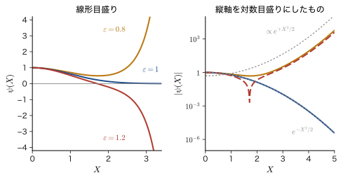
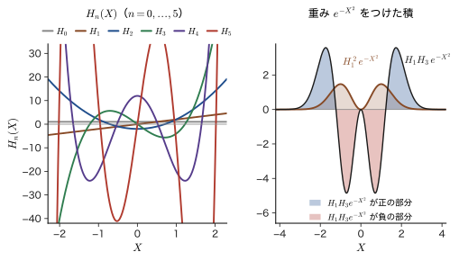
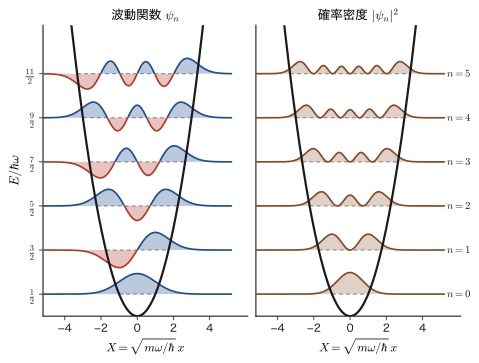
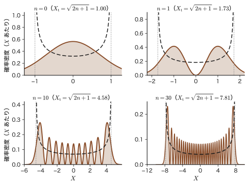
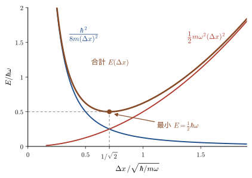
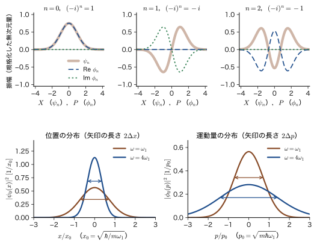
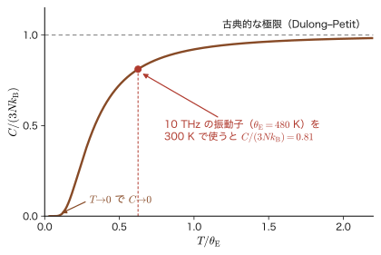

第13章調和振動子 — 級数解法と Hermite 多項式
ばねの先におもりをつけて引いて放すと，おもりは同じ周期で往復を繰り返す．この単振動の周期は，おもりの質量とばねの強さだけで決まり，振幅にはよらない．エネルギーは振幅の 2 乗に比例するので，振幅を少しずつ変えれば，エネルギーは好きな値にできる．ところが，これと同じ運動を原子や分子のスケールで Schrödinger（シュレーディンガー）方程式に従って調べると，エネルギーは $\tfrac12\hbar\omega,\ \tfrac32\hbar\omega,\ \tfrac52\hbar\omega,\dots$ という等間隔のとびとびの値だけになる．しかも，最低のエネルギーは $0$ ではなく $\tfrac12\hbar\omega$（零点エネルギー）で，粒子は絶対零度でも静止できない．この章の目的は，この結果を，途中の式を一行も飛ばさずに導くことである．
調和振動子は，量子力学でもっとも大切な問題の一つである．理由は，安定なつり合いの位置の近くでは，どんなポテンシャルも放物線で近似できるからである（Taylor 展開の第 2 項．大学基礎物理学 第4章 4.6）．分子の中の 2 つの原子の間の振動，結晶の中で格子点のまわりを揺れる原子（格子振動，フォノン），さらには電磁場の各モード（光子）まで，「つり合いのまわりの小さな振動」はすべて調和振動子として扱える．材料の赤外吸収，Raman 散乱，比熱，X 線回折の Debye–Waller 因子といった性質は，この章の結果が出発点になる．
解き方は，無限井戸（第10章）と対照的である．井戸では，解は $\sin$ と $\cos$ という既知の関数で，「両端で $0$」という境界条件がエネルギーの量子化を生んだ．調和振動子では，まず変数を無次元化して，遠方での振る舞い $e^{-X^2/2}$ を切り出し，残りの部分をべき級数で解く．べき級数は一般には途中で止まらず，$e^{X^2}$ のように発散して，波動関数を $x\to\pm\infty$ で無限大にしてしまう．級数が有限項で止まる（多項式になる）という条件が，エネルギーの量子化を生む．その多項式が Hermite（エルミート）多項式である．さらに，波動関数のグラフを古典的な振動と比べ，零点エネルギーの起源を不確定性原理で理解し，期待値を Gauss 積分で計算し，最後に運動量表示（Fourier 変換）で位置と運動量の対称性を見る．代数的な解き方（生成・消滅演算子）は 第56章で扱う．
- 調和振動子が量子力学で重要な理由（ポテンシャルの底の放物線近似）を説明し，ばね定数 $k_0=V''(x_{\mathrm e})$ から $\omega$ と $\hbar\omega$ を見積もれること
- Schrödinger 方程式を $X=\sqrt{m\omega/\hbar}\,x$，$\varepsilon=2E/\hbar\omega$ で無次元化し，$\psi=f\,e^{-X^2/2}$ とおいて Hermite の微分方程式 $f''-2Xf'+(\varepsilon-1)f=0$ を導けること
- べき級数から漸化式 $a_{j+2}=\dfrac{2j+1-\varepsilon}{(j+1)(j+2)}a_j$ を導き，級数が有限項で切れる条件 $\varepsilon=2n+1$ から $E_n=(n+\tfrac12)\hbar\omega$ を導けること
- Hermite 多項式 $H_n$ の定義・母関数・漸化式・直交性を使い，規格化された固有関数 $\psi_n$ を書き下せること
- $\lvert\psi_n\rvert^2$ を古典的な確率密度 $1/(\pi\sqrt{x_{\mathrm t}^2-x^2})$ と比べ，禁止領域の確率（$n=0$ で $15.7\ \%$）を計算できること
- 零点エネルギー $\tfrac12\hbar\omega$ を不確定性原理（相加相乗平均）から導き，「ゆらぎ」ではなく「エネルギーの下限」であることを説明できること
- Gauss 積分の漸化式で $\expval{p}$，$\expval{T}$，$\expval{V}$，$\expval{x^2}$ を求め，ビリアル定理 $\expval{T}=\expval{V}=E/2$ と Hellmann–Feynman の定理を使えること
- $\psi_n$ の Fourier 変換 $\phi_n(p)=(-i)^n\psi_n$ を導き，位置と運動量の対称性を説明できること
もとにしたノート：望月泰英『物理学ノート 量子力学2』 pp. 18–21，および調和振動子を扱った別の手書きノート 3 ページ．
13.1 調和振動子とは — 底の近くはどれも放物線
13.1.1 ばねにつながれた粒子 — 古典力学の調和振動子
調和振動子とは，ばねのように，つり合いの位置からのずれ $x$ に比例する力を受けて単振動する粒子のことである．古典力学で復習しておこう（大学基礎物理学 第7章 7.1）．質量 $m$ の粒子がばね定数 $k_0$ のばねにつながれているとき，粒子は復元力 $F=-k_0x$ を受け，運動方程式は $m\ddot{x}=-k_0x$ である．ここで，ばね定数を $k_0$ と書くのは，波の数を表す波数 $k$ と区別するためである．なお，前章（第12章 12.3 節）では，$k_0=\sqrt{2mE}/\hbar$ を波数の記号に使った．この章と第19章の $k_0$ はばね定数で，それとは別の量である．$\omega=\sqrt{k_0/m}$ とおくと，一般解は
\begin{equation} x(t)=A\cos(\omega t+\delta)\qquad\left(\omega=\sqrt{\frac{k_0}{m}}\right) \label{eq:13-classical} \end{equation}である．$A\ge0$ は振幅，$\delta$ は初期位相である．周期 $\tau=2\pi/\omega$ も振動数 $\nu=\omega/2\pi$ も，振幅 $A$ によらない．力 $F=-\dd V/\dd x=-k_0x$ を与えるポテンシャルエネルギーは $V(x)=\tfrac12k_0x^2=\tfrac12m\omega^2x^2$ で，原点で最小になる放物線である．全エネルギーは，粒子が端 $x=\pm A$ で一瞬止まる（速さ $0$）ことを使うと，
$$ E=\frac12mv^2+\frac12m\omega^2x^2=\frac12m\omega^2A^2 $$となる．$A$ は $0$ 以上のどんな値でもよいので，古典力学では，エネルギー $E$ も $0$ 以上のどんな値でもとれる．$E=0$（$A=0$）は，原点に静止している状態である．$x=\pm A$ は，運動エネルギーが $0$ になって粒子が向きを変える点で，転回点（turning point）という．古典的な粒子は，$\lvert x\rvert\gt A$ の領域（そこでは $V\gt E$ で，運動エネルギーが負になってしまう）には決して入れない．
定義13.1 1 次元調和振動子
質量 $m$ の粒子が $x$ 軸上を動き，そのポテンシャルエネルギーが
\begin{equation} V(x)=\frac12m\omega^2x^2\qquad(\omega\gt0) \label{eq:13-V} \end{equation}で与えられるとき，この粒子を 1 次元調和振動子（harmonic oscillator）という．$\omega$ は，古典力学での角振動数（$\omega=\sqrt{k_0/m}$）である．「調和」の名は，運動が 1 つの $\cos$ または $\sin$（調和関数）で表される単振動になることに由来する．
この章で解く問題は，次のとおりである．質量 $m$ の粒子（電子でも原子でもよい）が，ポテンシャル \eqref{eq:13-V} の中を，時間によらない状態（定常状態）で動くとき，時間を含まない Schrödinger 方程式（第9章）
\begin{equation} -\frac{\hbar^2}{2m}\frac{\dd^2\psi}{\dd x^2}+\frac12m\omega^2x^2\,\psi=E\,\psi \label{eq:13-tise} \end{equation}を満たす波動関数 $\psi(x)$ と，エネルギー $E$ をすべて求めよ．ただし，$\psi$ は $x\to\pm\infty$ で $0$ になり，規格化できるものとする（13.2 節）．
記号：状態の番号は $n=0,1,2,\dots$
この章では，状態を $n=0,1,2,\dots$ と数え，基底状態（もっともエネルギーの低い状態）を $n=0$ とする．無限井戸（第10章）や水素原子では $n=1$ から数えたので，混同しないこと．また，この章の波動関数は，時間を含む $\Psi(x,t)$ ではなく，定常状態の空間部分 $\psi_n(x)$ である（$\Psi_n(x,t)=\psi_n(x)\,e^{-iE_nt/\hbar}$）．
13.1.2 なぜ調和振動子が大切なのか — ポテンシャルの底は放物線
実際の粒子が感じるポテンシャル $V(x)$ は，放物線とは限らない．たとえば分子の中の 2 つの原子の間のポテンシャルは，近づきすぎると急に反発し，離れると結合が切れて一定の値に近づく（図13.1(b) の褐色の曲線）．それでも，安定なつり合いの位置 $x_{\mathrm e}$（$V$ が極小になる点）のごく近くだけを見れば，$V(x)$ は放物線で近似できる．$x_{\mathrm e}$ のまわりで Taylor 展開すると，
\begin{equation} V(x)=V(x_{\mathrm e})+V'(x_{\mathrm e})\,(x-x_{\mathrm e})+\frac12V''(x_{\mathrm e})\,(x-x_{\mathrm e})^2+\frac16V'''(x_{\mathrm e})\,(x-x_{\mathrm e})^3+\cdots \label{eq:13-taylor} \end{equation}である（大学基礎物理学 第4章 4.6 のポテンシャルエネルギー曲線）．極小点では力 $-V'(x_{\mathrm e})$ が $0$ なので第 2 項は消え，$V''(x_{\mathrm e})\gt0$ である．第 1 項 $V(x_{\mathrm e})$ はただの定数で，エネルギーの原点をずらして $0$ にできる．ずれ $x-x_{\mathrm e}$ が小さいとき，3 次以上の項は 2 次の項よりずっと小さいので無視できる．座標の原点を $x_{\mathrm e}$ に移す（$x-x_{\mathrm e}\to x$）と，
\begin{equation} V(x)\approx\frac12k_0x^2,\qquad k_0\equiv V''(x_{\mathrm e}),\qquad \omega=\sqrt{\frac{k_0}{m}}=\sqrt{\frac{V''(x_{\mathrm e})}{m}} \label{eq:13-k0} \end{equation}となり，式 \eqref{eq:13-V} の調和振動子ポテンシャルが得られる．つまりポテンシャルの底は，どれも放物線である．どんな複雑な系でも，安定なつり合いのまわりの小さな振動は，1 つのばね定数 $k_0=V''(x_{\mathrm e})$ だけで決まる調和振動子として扱えるので，調和振動子は量子力学でもっとも応用の広い問題になる．
応用：材料の中の調和振動子
分子：2 原子分子の核間距離は，平衡核間距離 $r_{\mathrm e}$ のまわりで振動する．この振動が，赤外吸収スペクトルや Raman スペクトルで観測される分子の振動である（第19章）．結晶：結晶中の各原子は，格子点のまわりを熱振動している．この格子振動を量子化した粒子（フォノン）が，固体の比熱や熱伝導を決める（13.8 節，第60章）．光：電磁場の各モードは，数学的には調和振動子と同じ方程式に従い，そのエネルギーの量子が光子である（第3章の Planck の仮説）．同じ 1 つの方程式が，分子・結晶・光のすべてを記述する．
注意：調和近似がよいのは底の近くだけ
放物線近似 \eqref{eq:13-k0} は，$x-x_{\mathrm e}$ が小さいときだけ有効である．振動の振幅が大きい（エネルギーが高い）状態では，3 次以上の項（非調和項）が効いて，準位の間隔が縮み，最終的には分子は解離してしまう．この非調和性は，Morse ポテンシャル（第20章）や摂動論（第27章）で扱う．この章の結果は，準位が底の近くにある低い $n$ の状態に対して正確である．
例題13.1 銅結晶の中の原子のばね定数と $\hbar\omega$
銅（Cu，原子量 $63.546$）の結晶の中で，1 つの原子が振動数 $\nu=10\ \mathrm{THz}=1.0\times10^{13}\ \mathrm{Hz}$ で単振動するとみなす（実際の Cu の格子振動は数 THz から 7 THz 程度までなので，計算しやすい値 $10\ \mathrm{THz}$ を仮に使う）．(1) 原子 1 個の質量，(2) ばね定数 $k_0$，(3) $\hbar\omega$（$\mathrm{meV}$ 単位），(4) $\hbar\omega/k_{\mathrm B}$（温度に換算した値）を求めよ．
解答 (1) 原子量 $63.546$ に原子質量単位 $u=1.6605\times10^{-27}\ \mathrm{kg}$ をかけて，$m=63.546\times1.6605\times10^{-27}=1.0552\times10^{-25}\ \mathrm{kg}$．
(2) 角振動数は $\omega=2\pi\nu=2\pi\times1.0\times10^{13}=6.283\times10^{13}\ \mathrm{s^{-1}}$．式 \eqref{eq:13-k0} より $k_0=m\omega^2$ なので，
$$ k_0=1.0552\times10^{-25}\times(6.283\times10^{13})^2=1.0552\times10^{-25}\times3.948\times10^{27}=4.17\times10^{2}\ \mathrm{N/m}. $$（身近なばねのばね定数は $10^{1}$〜$10^{2}\ \mathrm{N/m}$ 程度なので，それより数倍強い．原子は質量が非常に小さいので，これで $10\ \mathrm{THz}$ もの速い振動になる．）
(3) $\hbar\omega=h\nu=4.1357\times10^{-15}\ \mathrm{eV\,s}\times1.0\times10^{13}\ \mathrm{s^{-1}}=4.136\times10^{-2}\ \mathrm{eV}=41.4\ \mathrm{meV}$．
(4) $\hbar\omega=6.626\times10^{-21}\ \mathrm{J}$ を $k_{\mathrm B}=1.3806\times10^{-23}\ \mathrm{J/K}$ で割って，$\hbar\omega/k_{\mathrm B}=480\ \mathrm{K}$．室温 $300\ \mathrm{K}$ での熱エネルギー $k_{\mathrm B}T=25.9\ \mathrm{meV}$ は，この $\hbar\omega=41.4\ \mathrm{meV}$ より小さい．したがって室温でも，格子振動は「量子的な」振る舞い（13.8 節）を示す．
例題13.2 水素分子のポテンシャルの底のばね定数
水素分子 $\mathrm{H_2}$ の核間ポテンシャルを，Morse ポテンシャル（第20章）$V(x)=D\,(1-e^{-ax})^2$（$x=r-r_{\mathrm e}$，$D$ は結合の深さ）で表す．Morse ポテンシャルは，谷の深さ $D$ と谷の広がりを決める $a$ をもつ，2 原子分子の核間ポテンシャルの簡単な模型である．また，換算質量 $\mu=\dfrac{m_1m_2}{m_1+m_2}$ は，2 つの原子を 1 個の粒子に置き換えたときの質量である（第19章）．(1) 底の近くで Taylor 展開して，$k_0=2Da^2$ を示せ．(2) 振動の波数 $\tilde{\nu}=4401\ \mathrm{cm^{-1}}$，換算質量 $\mu=8.368\times10^{-28}\ \mathrm{kg}$ から $k_0$ を求め，$D=4.748\ \mathrm{eV}$ を使って $a$ を求めよ．
解答 (1) $e^{-ax}=1-ax+\tfrac12a^2x^2-\cdots$ より $1-e^{-ax}=ax-\tfrac12a^2x^2+\cdots$．これを 2 乗して $(1-e^{-ax})^2=a^2x^2-a^3x^3+\cdots$．よって $V(x)=Da^2x^2-Da^3x^3+\cdots$．第 1 項が調和項で，$\tfrac12k_0=Da^2$ より $k_0=2Da^2$（第 2 項以下が非調和項である）．
(2) 波数 $\tilde{\nu}$ の振動の角振動数は $\omega=2\pi c\tilde{\nu}$ である（$\omega=2\pi\nu=2\pi c/\lambda=2\pi c\tilde{\nu}$）．$\tilde{\nu}=4401\ \mathrm{cm^{-1}}=4.401\times10^{5}\ \mathrm{m^{-1}}$ なので $\omega=2\pi\times2.998\times10^{8}\times4.401\times10^{5}=8.29\times10^{14}\ \mathrm{s^{-1}}$．ここで振動する粒子の質量は 2 つの原子の換算質量 $\mu$ になる（第19章）ので，
$$ k_0=\mu\omega^2=8.368\times10^{-28}\times(8.29\times10^{14})^2=5.75\times10^{2}\ \mathrm{N/m}. $$$D=4.748\ \mathrm{eV}=4.748\times1.602\times10^{-19}=7.607\times10^{-19}\ \mathrm{J}$ を使って，
$$ a=\sqrt{\frac{k_0}{2D}}=\sqrt{\frac{575}{2\times7.607\times10^{-19}}}=\sqrt{3.78\times10^{20}}=1.94\times10^{10}\ \mathrm{m^{-1}}=1.94\ \mathring{\mathrm{A}}^{-1}. $$（Morse ポテンシャルの広がりの尺度 $1/a\approx0.51\ \mathring{\mathrm{A}}$ は，原子間距離 $0.74\ \mathring{\mathrm{A}}$ の程度である．）
13.2 無次元化と遠方の振る舞い
13.2.1 方程式を整理して無次元にする
まず，式 \eqref{eq:13-tise} の右辺の $E\psi$ を左辺に移して，$\psi$ をふくむ項をまとめる．
\begin{equation} -\frac{\hbar^2}{2m}\frac{\dd^2\psi}{\dd x^2}+\left(\frac12m\omega^2x^2-E\right)\psi=0 \label{eq:13-move} \end{equation}このままでは，$m$，$\omega$，$\hbar$ という 3 つの定数が式の中に散らばっている．そこで，$\psi''$ の係数が簡単になるように，両辺に $-\dfrac{2}{\hbar\omega}$ を掛ける（$-\dfrac{\hbar\omega}{2}$ で割るのと同じ）．各項の係数は，
$$ \left(-\frac{\hbar^2}{2m}\right)\!\left(-\frac{2}{\hbar\omega}\right)=\frac{\hbar}{m\omega},\qquad \left(\frac12m\omega^2\right)\!\left(-\frac{2}{\hbar\omega}\right)=-\frac{m\omega}{\hbar},\qquad (-E)\left(-\frac{2}{\hbar\omega}\right)=\frac{2E}{\hbar\omega} $$となるので，
\begin{equation} \frac{\hbar}{m\omega}\frac{\dd^2\psi}{\dd x^2}-\frac{m\omega}{\hbar}\,x^2\,\psi+\frac{2E}{\hbar\omega}\,\psi=0 \label{eq:13-arranged} \end{equation}を得る．3 つの項の係数は，どれも「次元をもたない数」になっている．実際，$\hbar/(m\omega)$ の単位は $\mathrm{J\,s}/(\mathrm{kg\,s^{-1}})=\mathrm{m^2}$（長さの 2 乗）で，$\psi''$ の単位 $\mathrm{m^{-2}}$ と掛けると無次元になる．$(m\omega/\hbar)\,x^2$ も，$2E/(\hbar\omega)$（エネルギーをエネルギー $\hbar\omega$ で割ったもの）も無次元である．ここに現れた長さ $\sqrt{\hbar/(m\omega)}$ とエネルギー $\hbar\omega$ が，この問題の自然な単位である．
定義13.2 無次元の座標 $X$ と無次元のエネルギー $\varepsilon$
調和振動子の長さの単位 $x_0$ と，それで測った無次元の座標 $X$，および無次元のエネルギー $\varepsilon$ を
\begin{equation} x_0=\sqrt{\frac{\hbar}{m\omega}},\qquad X=\frac{x}{x_0}=\sqrt{\frac{m\omega}{\hbar}}\,x,\qquad \varepsilon=\frac{2E}{\hbar\omega} \label{eq:13-dimless-def} \end{equation}で定義する．
$X=x/x_0$ より $x=x_0X$ なので，$\dfrac{\dd x}{\dd X}=x_0$ である．したがって，連鎖律で
$$ \frac{\dd^2\psi}{\dd X^2}=\left(\frac{\dd x}{\dd X}\right)^{\!2}\frac{\dd^2\psi}{\dd x^2}=x_0^2\,\frac{\dd^2\psi}{\dd x^2}=\frac{\hbar}{m\omega}\frac{\dd^2\psi}{\dd x^2} $$となり，これは式 \eqref{eq:13-arranged} の第 1 項そのものである．また $\dfrac{m\omega}{\hbar}x^2=\dfrac{x^2}{x_0^2}=X^2$ である．よって式 \eqref{eq:13-arranged} は
\begin{equation} \frac{\dd^2\psi}{\dd X^2}+\left(\varepsilon-X^2\right)\psi=0 \label{eq:13-dimless} \end{equation}と書ける（ここで $\psi$ を $X$ の関数として使う）．$m$，$\omega$，$\hbar$ が式から完全に消え，残ったパラメータは無次元のエネルギー $\varepsilon$ だけである．したがって，電子でも原子でも，どんな質量とばね定数の調和振動子でも，解くべき方程式は同じ式 \eqref{eq:13-dimless} になる．
イメージ：$\varepsilon$ は転回点の 2 乗
古典的な転回点 $x_{\mathrm t}$ では，運動エネルギーが $0$ になるので，$E=\tfrac12m\omega^2x_{\mathrm t}^2$，つまり $x_{\mathrm t}^2=\dfrac{2E}{m\omega^2}=\dfrac{\hbar}{m\omega}\cdot\dfrac{2E}{\hbar\omega}=x_0^2\,\varepsilon$ である．すなわち，無次元の座標 $X$ で測った転回点は $X_{\mathrm t}=\pm\sqrt{\varepsilon}$ である．式 \eqref{eq:13-dimless} を $\psi''=(X^2-\varepsilon)\,\psi$ と書くと，古典的に動ける領域 $X^2\lt\varepsilon$ では $\psi''$ と $\psi$ が逆符号になって $\psi$ は波打ち（振動的），古典的に動けない領域 $X^2\gt\varepsilon$ では $\psi''$ と $\psi$ が同符号になって $\psi$ は指数関数的に増減する．この符号の切り替わりが $X=\pm\sqrt{\varepsilon}$ で起こる．
例題13.3 調和振動子の長さの単位 $x_0$
(1) $\hbar\omega=1\ \mathrm{eV}$ の振動子に電子（質量 $m_{\mathrm e}$）を入れたときの $x_0$ を求めよ．(2) HCl 分子の振動（調和近似の波数 $2990\ \mathrm{cm^{-1}}$，換算質量 $\mu=1.627\times10^{-27}\ \mathrm{kg}$）の $x_0$ を求め，結合の長さ $127\ \mathrm{pm}$ と比べよ．
解答 (1) $x_0=\sqrt{\hbar/(m\omega)}=\hbar/\sqrt{m\,\hbar\omega}$ と変形すると，$\hbar\omega=1\ \mathrm{eV}=1.602\times10^{-19}\ \mathrm{J}$ を直接使える．
$$ x_0=\frac{1.0546\times10^{-34}}{\sqrt{9.109\times10^{-31}\times1.602\times10^{-19}}}=\frac{1.0546\times10^{-34}}{3.820\times10^{-25}}=2.76\times10^{-10}\ \mathrm{m}=0.276\ \mathrm{nm}. $$(2) $\hbar\omega=hc\tilde{\nu}=1.2398\times10^{-4}\ \mathrm{eV\,cm}\times2990\ \mathrm{cm^{-1}}=0.3707\ \mathrm{eV}=5.939\times10^{-20}\ \mathrm{J}$ なので，
$$ x_0=\frac{\hbar}{\sqrt{\mu\,\hbar\omega}}=\frac{1.0546\times10^{-34}}{\sqrt{1.627\times10^{-27}\times5.939\times10^{-20}}}=\frac{1.0546\times10^{-34}}{9.83\times10^{-24}}=1.07\times10^{-11}\ \mathrm{m}=10.7\ \mathrm{pm}. $$結合の長さ（約 $127\ \mathrm{pm}$）のおよそ $8\ \%$ である．振動子が重い（$\mu$ が大きい）ほど，またばねが硬い（$\hbar\omega$ が大きい）ほど，$x_0$ は小さくなる．
13.2.2 遠方での振る舞い — $e^{\pm X^2/2}$
式 \eqref{eq:13-dimless} は，$X^2$ という $X$ に依存する係数をもつので，$\sin$ や $\cos$ では解けない．そこで，まず $x\to\pm\infty$，すなわち $X\to\pm\infty$ で解がどう振る舞うかを調べる．$\varepsilon$ は（エネルギーで決まる）固定した数であるのに対し，$X^2$ は限りなく大きくなるので，$\lvert X\rvert$ が十分大きいところでは $\varepsilon\ll X^2$ となり，$(\varepsilon-X^2)\psi\approx-X^2\psi$ と近似できる．したがって，遠方では方程式は
\begin{equation} \frac{\dd^2\psi}{\dd X^2}-X^2\psi\approx0\qquad(\lvert X\rvert\gg1) \label{eq:13-asym} \end{equation}とみなせる．この解の見当をつけるために，$\psi=e^{\pm X^2/2}$（複号同順）を試そう．$\psi'=\pm X\,e^{\pm X^2/2}$，さらに微分して積の微分公式を使うと，
$$ \psi''=\pm e^{\pm X^2/2}+(\pm X)^2e^{\pm X^2/2}=(X^2\pm1)\,e^{\pm X^2/2} $$である．したがって $\psi''-X^2\psi=\pm\psi$ となり，式 \eqref{eq:13-asym} の左辺の $0$ からのずれ $\pm\psi$ は，主要な項 $X^2\psi$ に比べて $1/X^2$ 倍でしかなく，$\lvert X\rvert\gg1$ では無視できる．よって，遠方では
\begin{equation} \psi(X)\approx e^{\pm X^2/2}\qquad(\lvert X\rvert\gg1) \label{eq:13-asym-sol} \end{equation}の 2 つの型の解がある．ここで $\approx$ は，$X$ のべき乗の因子を無視した，指数関数の部分だけの一致を意味する（もう少し正確に調べると，$X^{-(\varepsilon+1)/2}e^{+X^2/2}$ と $X^{(\varepsilon-1)/2}e^{-X^2/2}$ の形になる）．遠方でどちらの指数関数に近いかを決めるには，それで十分である．一般には，この 2 つの一次結合 $A\,e^{X^2/2}+B\,e^{-X^2/2}$ になる．
注意：境界条件 —— $e^{+X^2/2}$ は不適
$e^{+X^2/2}$ は $\lvert X\rvert\to\infty$ で無限大に発散する．このような波動関数は，Born の確率解釈（第8章）で必要な規格化 $\displaystyle\int\lvert\psi\rvert^2\dd x=1$ ができないので，束縛状態を表さない．束縛状態の波動関数は，境界条件
$$ \lim_{x\to\pm\infty}\psi(x)=0 $$を満たさなければならない．そこで，$\psi=f\,e^{+X^2/2}$ のように $e^{+X^2/2}$ をくくり出した形は，$f$ が定数や多項式のような増えない関数のとき $x\to\pm\infty$ で発散するので不適であり，$e^{-X^2/2}$ をくくり出す．無限井戸では「壁で $\psi=0$」が量子化を生んだが，調和振動子では「無限遠で $\psi\to0$」が量子化を生む（13.3 節）．
13.2.3 $\psi=f\,e^{-X^2/2}$ とおいて Hermite の方程式を導く
遠方の振る舞い $e^{-X^2/2}$ を先に引き受けて，波動関数を
\begin{equation} \psi(X)=f(X)\,e^{-X^2/2} \label{eq:13-ansatz} \end{equation}とおく．$f(X)$ は，$e^{-X^2/2}$ で切り出した残りの部分で，まだ決まっていない関数である．これを式 \eqref{eq:13-dimless} に代入して，$f$ の方程式を求める．
導出：$f$ の方程式
積の微分公式と $\dfrac{\dd}{\dd X}e^{-X^2/2}=-X\,e^{-X^2/2}$ を使って，$\psi=f\,e^{-X^2/2}$ を 2 回微分する．
$$ \psi'=f'\,e^{-X^2/2}+f\,(-X)\,e^{-X^2/2}=(f'-Xf)\,e^{-X^2/2} $$もう一度微分する．$(f'-Xf)$ の微分は $f''-f-Xf'$ で，$e^{-X^2/2}$ の微分から $-X$ が出るので，
$$ \psi''=(f''-f-Xf')\,e^{-X^2/2}+(f'-Xf)(-X)\,e^{-X^2/2}=\left(f''-2Xf'+(X^2-1)f\right)e^{-X^2/2} $$となる．これを式 \eqref{eq:13-dimless} の $\psi''+(\varepsilon-X^2)\psi$ に代入すると，$X^2f$ の項が打ち消し合う：
$$ \left[f''-2Xf'+(X^2-1)f+(\varepsilon-X^2)f\right]e^{-X^2/2}=\left[f''-2Xf'+(\varepsilon-1)f\right]e^{-X^2/2}=0 $$$e^{-X^2/2}$ は決して $0$ にならないので，括弧の中が $0$ でなければならない．
（導出終わり）
定義13.3 Hermite の微分方程式
調和振動子の Schrödinger 方程式は，$\psi=f\,e^{-X^2/2}$ とおくと，$f(X)$ についての
\begin{equation} \frac{\dd^2f}{\dd X^2}-2X\frac{\dd f}{\dd X}+(\varepsilon-1)\,f=0 \label{eq:13-hermite-ode} \end{equation}に帰着する．これを Hermite（エルミート）の微分方程式という．$\varepsilon=2E/\hbar\omega$ である．
数学の道具：Hermite の微分方程式の解き方
式 \eqref{eq:13-hermite-ode} は，2 階の線形微分方程式だが，係数に $X$ が入っているので，定数係数の方程式のように $e^{\lambda X}$ を仮定しても解けない．このような方程式は，べき級数解法（解を $f=\sum_ja_jX^j$ とおいて係数を順に決める方法）で解く．数学としての解き方は 大学数学 第39章 39.2，この方程式そのものの解は 大学数学 第46章 46.2 にある．本章では，次の 13.3 節でこの方程式を解き，物理的な意味（量子化）を読み取る．
例題13.4 Hermite の方程式に直接代入して $\varepsilon$ を決める
式 \eqref{eq:13-hermite-ode} に，(1) $f=1$，(2) $f=X$ を代入して，それぞれが解になるような $\varepsilon$ を求めよ．対応するエネルギー $E$ はいくつか．
解答 (1) $f=1$ なら $f'=f''=0$ なので，式 \eqref{eq:13-hermite-ode} は $(\varepsilon-1)\cdot1=0$，すなわち $\varepsilon=1$．$E=\tfrac12\hbar\omega\,\varepsilon=\tfrac12\hbar\omega$．波動関数は $\psi=e^{-X^2/2}$ である．
(2) $f=X$ なら $f'=1$，$f''=0$ なので，$0-2X\cdot1+(\varepsilon-1)X=(\varepsilon-3)X=0$，すなわち $\varepsilon=3$．$E=\tfrac32\hbar\omega$，波動関数は $\psi=X\,e^{-X^2/2}$ である．
（$\psi=X\,e^{-X^2/2}$ を式 \eqref{eq:13-dimless} に直接代入しても確かめられる．$\psi'=(1-X^2)e^{-X^2/2}$，$\psi''=(X^3-3X)e^{-X^2/2}$ なので，$\psi''+(\varepsilon-X^2)\psi=(X^3-3X+\varepsilon X-X^3)e^{-X^2/2}=(\varepsilon-3)X\,e^{-X^2/2}$ となる．）
13.3 級数解法とエネルギーの量子化
13.3.1 べき級数を代入する — 係数の漸化式
Hermite の方程式 \eqref{eq:13-hermite-ode} の解を，べき級数
\begin{equation} f(X)=\sum_{j=0}^{\infty}a_jX^j=a_0+a_1X+a_2X^2+a_3X^3+\cdots \label{eq:13-series} \end{equation}とおいて，係数 $a_j$ を決めよう．この方程式の係数（$1$，$-2X$，$\varepsilon-1$）はどれも多項式なので，解は $X$ のすべての値で収束するべき級数で書ける（大学数学 第39章 39.2）．項別に微分すると，
$$ f'=\sum_{j=1}^{\infty}j\,a_jX^{j-1},\qquad f''=\sum_{j=2}^{\infty}j(j-1)\,a_jX^{j-2},\qquad 2Xf'=\sum_{j=1}^{\infty}2j\,a_jX^{j}=\sum_{j=0}^{\infty}2j\,a_jX^{j} $$である（最後の等号は，$j=0$ の項が $0$ なので，和の始まりを $j=0$ にそろえた）．$f''$ の和は，$X$ のべきをそろえるために，添字を $j\to j+2$ とずらして，
$$ f''=\sum_{j=0}^{\infty}(j+2)(j+1)\,a_{j+2}X^{j} $$と書き直す（$j=2$ から始まっていた和が $j=0$ から始まる．$X^{j-2}$ が $X^{j}$ になる）．これらを式 \eqref{eq:13-hermite-ode} に代入すると，
$$ \sum_{j=0}^{\infty}\Bigl[(j+2)(j+1)\,a_{j+2}-2j\,a_j+(\varepsilon-1)\,a_j\Bigr]X^{j}=0 $$となる．べき級数が恒等的に $0$ になるのは，$X^j$ の係数がすべて $0$ のときだけである．$-2j+(\varepsilon-1)=-(2j+1-\varepsilon)$ に注意すると，係数の条件は次のようになる．
定理13.1 係数の漸化式
べき級数 \eqref{eq:13-series} が Hermite の方程式 \eqref{eq:13-hermite-ode} を満たすための条件は，
\begin{equation} a_{j+2}=\frac{2j+1-\varepsilon}{(j+1)(j+2)}\,a_j\qquad(j=0,1,2,\dots) \label{eq:13-recur} \end{equation}である．
この漸化式は，$a_j$ と $a_{j+2}$ だけを結ぶので，偶数番の係数（$a_0$ から出発）と奇数番の係数（$a_1$ から出発）が，互いに独立な 2 つの系列に分かれる．$a_0$ と $a_1$ は自由に選べる（2 階の微分方程式の 2 つの任意定数に対応する）．具体的に書くと，
$$ a_2=\frac{1-\varepsilon}{2}\,a_0,\quad a_4=\frac{5-\varepsilon}{12}\,a_2=\frac{(1-\varepsilon)(5-\varepsilon)}{24}\,a_0,\quad\dots;\qquad a_3=\frac{3-\varepsilon}{6}\,a_1,\quad a_5=\frac{7-\varepsilon}{20}\,a_3=\frac{(3-\varepsilon)(7-\varepsilon)}{120}\,a_1,\quad\dots $$である．したがって，一般解は，偶関数の系列と奇関数の系列の和
$$ f(X)=a_0\Bigl[1+\frac{1-\varepsilon}{2}X^2+\frac{(1-\varepsilon)(5-\varepsilon)}{24}X^4+\cdots\Bigr]+a_1\Bigl[X+\frac{3-\varepsilon}{6}X^3+\frac{(3-\varepsilon)(7-\varepsilon)}{120}X^5+\cdots\Bigr] $$になる．ここまでは $\varepsilon$ の値に制限がなく，どんな $\varepsilon$ に対しても解がある．エネルギーの量子化は，次に見る境界条件から出てくる．
13.3.2 級数が止まらないと発散する — 量子化の条件
級数が無限に続くとき，$j$ が大きい項がどう振る舞うかを調べる．漸化式 \eqref{eq:13-recur} で $j\to\infty$ とすると，
\begin{equation} \frac{a_{j+2}}{a_j}=\frac{2j+1-\varepsilon}{(j+1)(j+2)}\ \longrightarrow\ \frac{2j}{j^2}=\frac{2}{j}\qquad(j\to\infty) \label{eq:13-ratio} \end{equation}である．これを，指数関数 $e^{X^2}$ の級数と比べよう．$e^{X^2}=\displaystyle\sum_{m=0}^{\infty}\frac{X^{2m}}{m!}$ の $X^{2m}$ の係数は $b_{2m}=\dfrac{1}{m!}$ なので，隣り合う偶数次の係数の比は，$j=2m$ として
$$ \frac{b_{j+2}}{b_j}=\frac{1/(m+1)!}{1/m!}=\frac{1}{m+1}=\frac{2}{2m+2}=\frac{2}{j+2}\ \longrightarrow\ \frac{2}{j}\qquad(j\to\infty) $$となり，式 \eqref{eq:13-ratio} と同じである．すなわち，級数が止まらない場合，$X$ が大きいところでは $f(X)$ は $e^{X^2}$ と同じ速さ（べき乗の因子を除いて）で増える．すると，波動関数は
$$ \psi=f\,e^{-X^2/2}\sim e^{X^2}\,e^{-X^2/2}=e^{+X^2/2}\qquad(X\to\infty) $$となって，13.2.2 節で「不適」とした $e^{+X^2/2}$ の型になってしまう．図13.2 は，これを数値で見たものである．$f(0)=1$，$f'(0)=0$ から出発した偶関数の解を，3 つの $\varepsilon$ について描いた．$\varepsilon=1$ ちょうどのときだけ $\psi=e^{-X^2/2}$（例題13.4）で $0$ に近づき，$\varepsilon$ を $0.8$ や $1.2$ に少しずらすと，$\psi$ は $X=2$ 付近から $+\infty$ または $-\infty$ に発散する．

したがって，境界条件 $\psi\to0$（$x\to\pm\infty$）を満たすためには，級数が有限項で止まって多項式にならなければならない（偶数次の系列は $X\to-X$ で不変，奇数次の系列は符号が反転するので，$X\to+\infty$ と $X\to-\infty$ の両方で発散を打ち消すことはできない．したがって，偶数次の系列と奇数次の系列のそれぞれが，多項式に打ち切られなければならない）．すなわち，ある整数 $n\ge0$ があって，$a_n\ne0$ かつ $a_{n+2}=0$ となる必要がある．そうなれば，漸化式 \eqref{eq:13-recur} により $a_{n+4},a_{n+6},\dots$ もすべて $0$ になる．$a_{n+2}=0$ となるのは，式 \eqref{eq:13-recur} で $j=n$ とおいた分子が $0$ になるとき，すなわち $2n+1-\varepsilon=0$ のときである．
定理13.2 調和振動子のエネルギーの量子化
調和振動子の Schrödinger 方程式が，境界条件 $\psi\to0$（$x\to\pm\infty$）を満たす解をもつのは，無次元エネルギー $\varepsilon=2E/\hbar\omega$ が
\begin{equation} \varepsilon=2n+1\quad(n=0,1,2,\dots)\qquad\text{すなわち}\qquad E_n=\left(n+\frac12\right)\hbar\omega \label{eq:13-En} \end{equation}のときに限る．$n$ を量子数（quantum number）という．
ここで，偶奇に注意しよう．$n$ が偶数のときは，偶数次の系列を打ち切って $a_0,a_2,\dots,a_n$ だけを残す．奇数次の系列 $a_1,a_3,\dots$ は，$j$ が奇数で $j=n$（偶数）にはなり得ないので，$a_{j+2}=0$ の条件が満たされず，止まらない．そのため，$a_1=0$ としてその系列を消す必要がある．$n$ が奇数のときは逆に，$a_0=0$ として偶数次の系列を消し，奇数次の系列 $a_1,a_3,\dots,a_n$ を残す．どちらの場合も，$f$ は $n$ 次の多項式で，$n$ が偶数なら偶関数，奇数なら奇関数になる．
イメージ：無限井戸との対比 —— 量子化はどこから来るのか
無限井戸（第10章）では，方程式は任意の $E$ に対して解（$\sin kx$ と $\cos kx$）をもち，「壁で $\psi=0$」という境界条件が $k$ を制限して $E_n\propto n^2$ を生んだ．調和振動子でも同じことが起こる．方程式は任意の $\varepsilon$ に対して解をもつが，「無限遠で $\psi\to0$」という境界条件を満たせるのは $\varepsilon=2n+1$ のときだけで，$E_n=(n+\tfrac12)\hbar\omega$ となる．違いは，無限井戸では準位が $n^2$ に比例して間隔が広がるのに対し，調和振動子では等間隔（$E_{n+1}-E_n=\hbar\omega$）になることである．さらに，$n=0$ でもエネルギーが $0$ にならず，$E_0=\tfrac12\hbar\omega$（零点エネルギー）であることが大きな特徴である（13.4，13.5 節）．
13.3.3 打ち切られた級数 — Hermite 多項式
$\varepsilon=2n+1$ とすると，漸化式 \eqref{eq:13-recur} の分子は $2j+1-(2n+1)=2(j-n)$ なので，
\begin{equation} a_{j+2}=\frac{2(j-n)}{(j+1)(j+2)}\,a_j \label{eq:13-recur-n} \end{equation}となる．$j=n$ で $a_{n+2}=0$ となり，最高次の係数は $a_n$ である．この漸化式を，最高次 $a_n$ から下向きに解こう．式 \eqref{eq:13-recur-n} を $a_j$ について解くと $a_j=-\dfrac{(j+1)(j+2)}{2(n-j)}\,a_{j+2}$ である．$j=n-2k$（$k=1,2,\dots$）とおくと，$n-j=2k$ なので，
$$ a_{n-2k}=-\frac{(n-2k+1)(n-2k+2)}{4k}\,a_{n-2k+2} $$となる．$k=1,2,\dots$ と順に使うと，
$$ a_{n-2}=-\frac{n(n-1)}{4}\,a_n,\qquad a_{n-4}=-\frac{(n-2)(n-3)}{8}\,a_{n-2}=\frac{n(n-1)(n-2)(n-3)}{4\cdot8}\,a_n,\qquad\dots $$である．一般に，$k$ 個の因子 $-\dfrac{(n-2i+1)(n-2i+2)}{4i}$（$i=1,\dots,k$）を掛け合わせると，分子は $n(n-1)(n-2)\cdots(n-2k+1)=\dfrac{n!}{(n-2k)!}$，分母は $4^k\,k!$ になるので，
$$ a_{n-2k}=\frac{(-1)^k\,n!}{(n-2k)!\,4^k\,k!}\,a_n\qquad(k=0,1,\dots,[n/2]) $$となる．ここで $[n/2]$ は，$n/2$ を超えない最大の整数（Gauss 記号）で，$n-2k\ge0$ となる最大の $k$ である．最高次の係数を $a_n=2^nC_n$ とおく（$C_n$ は後で規格化から決める定数）と，$4^k=2^{2k}$ より $\dfrac{2^n}{4^k}=2^{n-2k}$ なので，
$$ a_{n-2k}=C_n\,\frac{(-1)^k\,n!}{(n-2k)!\,k!}\,2^{n-2k} $$である．よって，$f(X)=\sum_ka_{n-2k}X^{n-2k}$ は次の形になる．
\begin{equation} f(X)=C_n\sum_{k=0}^{[n/2]}\frac{(-1)^k\,n!}{(n-2k)!\,k!}\,(2X)^{n-2k},\qquad\varepsilon=2n+1\quad(n=0,1,2,\dots) \label{eq:13-f-sum} \end{equation}$\psi=f\,e^{-X^2/2}$ に戻して $x$ で書くと，$C_n$ を残したまま，
\begin{equation} \psi(x)=C_n\,e^{-\frac{m\omega}{2\hbar}x^2}\sum_{k=0}^{[n/2]}\frac{(-1)^k\,n!}{(n-2k)!\,k!}\left(2\sqrt{\frac{m\omega}{\hbar}}\,x\right)^{n-2k} \label{eq:13-psi-unnorm} \end{equation}となる（$C_n$ は，13.3.4 節で規格化条件から決める）．
定義13.4 Hermite 多項式
非負の整数 $n$ に対して，
\begin{equation} H_n(X)=n!\sum_{k=0}^{[n/2]}\frac{(-1)^k}{k!\,(n-2k)!}\,(2X)^{n-2k} \label{eq:13-Hn} \end{equation}で定義される $n$ 次の多項式 $H_n(X)$ を，Hermite 多項式（Hermite polynomial）という（物理学で標準の規約．最高次の係数は $2^n$）．
式 \eqref{eq:13-f-sum} の和は，ちょうど $H_n(X)$ である．すなわち $f(X)=C_n\,H_n(X)$ で，$H_n$ は Hermite の方程式 \eqref{eq:13-hermite-ode} の $\varepsilon-1=2n$ の場合
\begin{equation} H_n''-2XH_n'+2n\,H_n=0 \label{eq:13-hermite-n} \end{equation}を満たす．式 \eqref{eq:13-Hn} から，最初のいくつかは表13.1 のようになる．たとえば $n=2$ では，$k=0$ の項が $\dfrac{2!}{0!\,2!}(2X)^2=4X^2$，$k=1$ の項が $\dfrac{(-1)\,2!}{1!\,0!}(2X)^0=-2$ なので，$H_2=4X^2-2$ である．
| $n$ | $H_n(X)$ | パリティ | 実数の零点の数 |
|---|---|---|---|
| 0 | $1$ | 偶 | 0 |
| 1 | $2X$ | 奇 | 1 |
| 2 | $4X^2-2$ | 偶 | 2 |
| 3 | $8X^3-12X$ | 奇 | 3 |
| 4 | $16X^4-48X^2+12$ | 偶 | 4 |
| 5 | $32X^5-160X^3+120X$ | 奇 | 5 |
$H_n$ は $n$ が偶数なら偶関数，奇数なら奇関数で，$H_n(-X)=(-1)^nH_n(X)$ である．また，$n$ 個の異なる実数の零点をもつ（図13.3）．したがって波動関数 $\psi_n=C_nH_n\,e^{-X^2/2}$ は，$n$ 個の節をもつ．
例題13.5 漸化式から $n=3$ の解 $H_3$ を作る
$\varepsilon=2\cdot3+1=7$ の場合に，漸化式 \eqref{eq:13-recur} から $f(X)$ を求め，表13.1 の $H_3=8X^3-12X$ と一致することを確かめよ．
解答 $n=3$ は奇数なので，奇数次の系列 $a_1,a_3,a_5,\dots$ を使い，$a_0=0$（したがって $a_2=a_4=\cdots=0$）とする．式 \eqref{eq:13-recur} で $\varepsilon=7$ とすると，
$$ a_3=\frac{2\cdot1+1-7}{(1+1)(1+2)}\,a_1=\frac{-4}{6}\,a_1=-\frac{2}{3}\,a_1,\qquad a_5=\frac{2\cdot3+1-7}{(3+1)(3+2)}\,a_3=\frac{0}{20}\,a_3=0 $$である．$a_5=0$ なので，$a_7,a_9,\dots$ もすべて $0$ で，級数は $X^3$ で止まる：$f=a_1\bigl(X-\tfrac23X^3\bigr)$．これは $a_1=-12$ とすれば $-12X+8X^3=H_3$ になる．表13.1 と一致する．また，式 \eqref{eq:13-Hn} で直接計算すると，$k=0$：$\dfrac{3!}{0!\,3!}(2X)^3=8X^3$，$k=1$：$\dfrac{-3!}{1!\,1!}(2X)=-12X$ となり，これも $H_3=8X^3-12X$ である．
13.3.4 Hermite 多項式の性質 — 母関数と直交性
規格化定数 $C_n$ を決めるには，積分 $\int H_n^2\,e^{-X^2}\dd X$ が必要になる．これを $n$ ごとに計算する代わりに，すべての $n$ を一度に扱う便利な道具である母関数を使おう．
定理13.3 Hermite 多項式の性質
(a) 母関数：$\displaystyle e^{2Xt-t^2}=\sum_{n=0}^{\infty}H_n(X)\,\frac{t^n}{n!}$ (b) Rodrigues の公式：$\displaystyle H_n(X)=(-1)^n\,e^{X^2}\frac{\dd^n}{\dd X^n}e^{-X^2}$
(c) 微分：$H_n'(X)=2n\,H_{n-1}(X)$ (d) 漸化式：$X\,H_n(X)=\dfrac12H_{n+1}(X)+n\,H_{n-1}(X)$
(e) 直交性：
\begin{equation} \int_{-\infty}^{\infty}H_m(X)\,H_n(X)\,e^{-X^2}\dd X=\sqrt{\pi}\,2^n\,n!\;\delta_{mn} \label{eq:13-ortho} \end{equation}証明
(a) $e^{2Xt-t^2}=e^{2Xt}\,e^{-t^2}$ を，それぞれ指数関数の級数に展開する．
$$ e^{2Xt}\,e^{-t^2}=\sum_{a=0}^{\infty}\frac{(2Xt)^a}{a!}\ \sum_{k=0}^{\infty}\frac{(-1)^kt^{2k}}{k!} $$$t^n$ の係数は，$a+2k=n$ となる組 $(a,k)$，すなわち $a=n-2k$（$k=0,\dots,[n/2]$）の和で，$\displaystyle\sum_{k=0}^{[n/2]}\frac{(2X)^{n-2k}}{(n-2k)!}\frac{(-1)^k}{k!}$ である．これは式 \eqref{eq:13-Hn} を $n!$ で割ったもの $H_n(X)/n!$ に等しい．
(b) $2Xt-t^2=X^2-(t-X)^2$ なので，母関数は $G(X,t)=e^{X^2}\,e^{-(t-X)^2}$ と書ける．(a) より $H_n=\left.\dfrac{\partial^nG}{\partial t^n}\right|_{t=0}$ である．$e^{-(t-X)^2}$ は $t-X$ だけの関数なので，$\dfrac{\partial}{\partial t}$ は $-\dfrac{\partial}{\partial X}$ と同じ結果を与える．よって $\left.\dfrac{\partial^n}{\partial t^n}e^{-(t-X)^2}\right|_{t=0}=(-1)^n\dfrac{\dd^n}{\dd X^n}e^{-X^2}$ となり，(b) を得る．
(c) $G$ を $X$ で微分すると $\dfrac{\partial G}{\partial X}=2t\,G$ である．母関数の級数を代入すると，左辺は $\sum_nH_n'\dfrac{t^n}{n!}$，右辺は $\sum_m2H_m\dfrac{t^{m+1}}{m!}$ である．右辺で $n=m+1$ とおくと $t^n$ の係数は $\dfrac{2H_{n-1}}{(n-1)!}$ なので，$\dfrac{H_n'}{n!}=\dfrac{2H_{n-1}}{(n-1)!}$，すなわち $H_n'=2n\,H_{n-1}$ である．
(d) $G$ を $t$ で微分すると $\dfrac{\partial G}{\partial t}=(2X-2t)\,G$ である．左辺は $\sum_{n\ge1}H_n\dfrac{t^{n-1}}{(n-1)!}=\sum_{n\ge0}H_{n+1}\dfrac{t^n}{n!}$，右辺は $2X\sum_nH_n\dfrac{t^n}{n!}-2\sum_nH_n\dfrac{t^{n+1}}{n!}$ で，2 つ目の和は $t^n$ の係数が $\dfrac{2H_{n-1}}{(n-1)!}$ である．$t^n$ の係数を比べると $\dfrac{H_{n+1}}{n!}=\dfrac{2XH_n}{n!}-\dfrac{2H_{n-1}}{(n-1)!}$．両辺に $n!$ を掛けて $H_{n+1}=2XH_n-2nH_{n-1}$，これを整理すると (d) を得る．
(e) 2 つの母関数 $G(X,s)$，$G(X,t)$ と重み $e^{-X^2}$ を掛けると，指数部分は
$$ 2Xs-s^2+2Xt-t^2-X^2=-(X-s-t)^2+2st $$となる（$-X^2+2X(s+t)=-(X-s-t)^2+(s+t)^2$ を使い，$(s+t)^2-s^2-t^2=2st$）．これを $X$ で積分すると，Gauss 積分 $\int e^{-(X-s-t)^2}\dd X=\sqrt{\pi}$ より，
$$ \int_{-\infty}^{\infty}G(X,s)\,G(X,t)\,e^{-X^2}\dd X=\sqrt{\pi}\,e^{2st}=\sqrt{\pi}\sum_{n=0}^{\infty}\frac{2^n\,s^nt^n}{n!} $$である．一方，左辺に母関数の級数を代入すると $\displaystyle\sum_{m,n}\frac{s^m\,t^n}{m!\,n!}\int H_mH_n\,e^{-X^2}\dd X$ となる．2 つの $s,t$ のべき級数が等しいので，$s^mt^n$ の係数を比べて $\dfrac{1}{m!\,n!}\displaystyle\int H_mH_ne^{-X^2}\dd X=\sqrt{\pi}\,\dfrac{2^n}{n!}\,\delta_{mn}$．これは (e) である．
（証明終わり）

式 \eqref{eq:13-ortho} を使って規格化を行う．$\psi_n(x)=C_n\,H_n(X)\,e^{-X^2/2}$，$X=x/x_0$，$\dd x=x_0\dd X$ を規格化条件に代入して，
$$ \int_{-\infty}^{\infty}\lvert\psi_n\rvert^2\dd x=C_n^2\,x_0\int_{-\infty}^{\infty}H_n(X)^2\,e^{-X^2}\dd X=C_n^2\,x_0\,\sqrt{\pi}\,2^n\,n!=1 $$より，$C_n^2=\dfrac{1}{x_0\sqrt{\pi}\,2^nn!}=\sqrt{\dfrac{m\omega}{\pi\hbar}}\dfrac{1}{2^nn!}$，すなわち $C_n=\left(\dfrac{m\omega}{\pi\hbar}\right)^{1/4}\dfrac{1}{\sqrt{2^n\,n!}}$ である．また，異なる $m\ne n$ に対しては同じ計算で $\int\psi_m\psi_n\dd x=0$ となる．以上をまとめる．
定理13.4 調和振動子の固有関数と固有値
1 次元調和振動子 \eqref{eq:13-tise} の，規格化された定常状態は，$n=0,1,2,\dots$ に対して
\begin{equation} \psi_n(x)=\left(\frac{m\omega}{\pi\hbar}\right)^{1/4}\frac{1}{\sqrt{2^n\,n!}}\;H_n\!\left(\sqrt{\frac{m\omega}{\hbar}}\,x\right)e^{-\frac{m\omega}{2\hbar}x^2},\qquad E_n=\left(n+\frac12\right)\hbar\omega \label{eq:13-psin} \end{equation}である．和の形を書き下すと，
\begin{equation} \psi_n(x)=\left(\frac{m\omega}{\pi\hbar}\right)^{1/4}\frac{1}{\sqrt{2^n\,n!}}\;e^{-\frac{m\omega}{2\hbar}x^2}\sum_{k=0}^{[n/2]}\frac{(-1)^k\,n!}{(n-2k)!\,k!}\left(2\sqrt{\frac{m\omega}{\hbar}}\,x\right)^{n-2k} \label{eq:13-psin-sum} \end{equation}である．固有関数は正規直交系で，Dirac 記法（第10章）で $\braket{m}{n}=\displaystyle\int\psi_m\psi_n\dd x=\delta_{mn}$ と書ける．
例題13.6 数値積分で「$\varepsilon=1$ だけが減衰する」ことを確かめる
方程式 $\psi''=(X^2-\varepsilon)\,\psi$ を，$X=0$ での初期条件 $\psi(0)=1$，$\psi'(0)=0$ から数値的に積分して，$\varepsilon=0.8,\ 1.0,\ 1.2$ での $\psi(5)$ を求め，結果を式 \eqref{eq:13-En} と比べよ．
解答 Python の SciPy で，2 階の方程式を $y_0=\psi$，$y_1=\psi'$ の 1 階の連立方程式 $y_0'=y_1$，$y_1'=(X^2-\varepsilon)y_0$ に直して Runge–Kutta 法で解く．
import numpy as np
from scipy.integrate import solve_ivp
def psi_at(eps, X_end=5.0):
rhs = lambda X, y: [y[1], (X**2 - eps) * y[0]] # psi'' = (X^2 - eps) psi
sol = solve_ivp(rhs, [0, X_end], [1.0, 0.0], rtol=1e-12, atol=1e-16)
return sol.y[0, -1]
for eps in (0.8, 1.0, 1.2):
print(eps, psi_at(eps))結果は，$\varepsilon=0.8$ で $\psi(5)=5.84\times10^{3}$，$\varepsilon=1.0$ で $\psi(5)=3.73\times10^{-6}$，$\varepsilon=1.2$ で $\psi(5)=-4.02\times10^{3}$ である．$\varepsilon=1$ の値は，厳密解 $e^{-X^2/2}$ の $X=5$ での値 $e^{-12.5}=3.73\times10^{-6}$ と一致する（精度を高くとってあるので，$X=5$ まで真の解を追える）．$\varepsilon=0.8$ と $1.2$ では，$\psi(5)$ が $10^{3}$ を超えて，符号が逆の無限大に向かう（図13.2）．式 \eqref{eq:13-En} の $\varepsilon=2n+1$ の値（$1,3,5,\dots$）からずれると，解は $e^{+X^2/2}$ で発散する．
例題13.7 $\psi_2$ の規格化と，$\psi_0$ との直交性
式 \eqref{eq:13-psin} の $n=2$ の波動関数 $\psi_2$ が規格化されていること，および $\psi_0$ と直交することを，Gauss 積分 $\int e^{-X^2}\dd X=\sqrt{\pi}$，$\int X^2e^{-X^2}\dd X=\dfrac{\sqrt{\pi}}{2}$，$\int X^4e^{-X^2}\dd X=\dfrac{3\sqrt{\pi}}{4}$（大学数学 第7章 7.5．一般の公式は 13.6 節）で直接確かめよ．
解答 $C_2=\left(\dfrac{m\omega}{\pi\hbar}\right)^{1/4}\dfrac{1}{\sqrt{8}}$，$H_2=4X^2-2=2(2X^2-1)$ より，$\psi_2=\left(\dfrac{m\omega}{\pi\hbar}\right)^{1/4}\dfrac{1}{\sqrt2}\,(2X^2-1)\,e^{-X^2/2}$．また $\psi_0=\left(\dfrac{m\omega}{\pi\hbar}\right)^{1/4}e^{-X^2/2}$．$\left(\dfrac{m\omega}{\pi\hbar}\right)^{1/2}\dd x=\dfrac{1}{\sqrt{\pi}\,x_0}\,x_0\dd X=\dfrac{1}{\sqrt{\pi}}\dd X$ なので，
$$ \int\psi_2^2\dd x=\frac{1}{2\sqrt{\pi}}\int(2X^2-1)^2e^{-X^2}\dd X=\frac{1}{2\sqrt{\pi}}\int(4X^4-4X^2+1)\,e^{-X^2}\dd X $$ $$ =\frac{1}{2\sqrt{\pi}}\left(4\cdot\frac{3\sqrt{\pi}}{4}-4\cdot\frac{\sqrt{\pi}}{2}+\sqrt{\pi}\right)=\frac12\,(3-2+1)=1. $$直交性は，
$$ \int\psi_0\psi_2\dd x=\frac{1}{\sqrt{2\pi}}\int(2X^2-1)\,e^{-X^2}\dd X=\frac{1}{\sqrt{2\pi}}\left(2\cdot\frac{\sqrt{\pi}}{2}-\sqrt{\pi}\right)=0. $$となり，確かに $0$ である．
ここで求めた $\psi_0,\psi_1,\psi_2,\dots$ の具体的な形と，そのグラフ・意味は次の 13.4 節で調べる．
13.4 波動関数のグラフと古典的な描像
13.4.1 $n=0,1,2$ の波動関数 — 零点エネルギー
式 \eqref{eq:13-psin} で，量子数が小さい状態がどのような関数になるかを具体的に計算しよう．係数 $\left(\dfrac{m\omega}{\pi\hbar}\right)^{1/4}$ を $A$ と書き，$X=\sqrt{m\omega/\hbar}\,x$ を使う．表13.1 の $H_n$ と $C_n=A/\sqrt{2^nn!}$ から，次のようになる．
(i) $n=0$：$H_0=1$，$C_0=A$ より
\begin{equation} \psi_0(x)=\left(\frac{m\omega}{\pi\hbar}\right)^{1/4}e^{-\frac{m\omega}{2\hbar}x^2},\qquad E_0=\frac12\hbar\omega \label{eq:13-psi0} \end{equation}(ii) $n=1$：$H_1=2X$，$C_1=A/\sqrt{2}$ より $\psi_1=\dfrac{A}{\sqrt{2}}\cdot2X\,e^{-X^2/2}=A\sqrt{2}\,X\,e^{-X^2/2}$．$\sqrt{2}\,X=\sqrt{\dfrac{2m\omega}{\hbar}}\,x$ なので，
\begin{equation} \psi_1(x)=\left(\frac{m\omega}{\pi\hbar}\right)^{1/4}\sqrt{\frac{2m\omega}{\hbar}}\;x\,e^{-\frac{m\omega}{2\hbar}x^2},\qquad E_1=\frac32\hbar\omega \label{eq:13-psi1} \end{equation}(iii) $n=2$：$H_2=4X^2-2$，$C_2=A/\sqrt{8}$ より $\psi_2=\dfrac{A}{\sqrt{8}}(4X^2-2)\,e^{-X^2/2}=\dfrac{A}{\sqrt{2}}(2X^2-1)\,e^{-X^2/2}$（$\sqrt{8}=2\sqrt{2}$ より $\dfrac{4X^2-2}{2\sqrt{2}}=\dfrac{2X^2-1}{\sqrt{2}}$）．$X^2=\dfrac{m\omega}{\hbar}x^2$ なので，
\begin{equation} \psi_2(x)=\left(\frac{m\omega}{\pi\hbar}\right)^{1/4}\frac{1}{\sqrt{2}}\left(\frac{2m\omega}{\hbar}x^2-1\right)e^{-\frac{m\omega}{2\hbar}x^2},\qquad E_2=\frac52\hbar\omega \label{eq:13-psi2} \end{equation}| $n$ | $E_n$ | $\psi_n(x)$ | 節の位置 |
|---|---|---|---|
| 0 | $\tfrac12\hbar\omega$ | $A\,e^{-X^2/2}$ | なし |
| 1 | $\tfrac32\hbar\omega$ | $A\sqrt{2}\,X\,e^{-X^2/2}$ | $X=0$ |
| 2 | $\tfrac52\hbar\omega$ | $\dfrac{A}{\sqrt{2}}(2X^2-1)\,e^{-X^2/2}$ | $X=\pm\dfrac{1}{\sqrt{2}}$ |
| 3 | $\tfrac72\hbar\omega$ | $\dfrac{A}{\sqrt{3}}(2X^3-3X)\,e^{-X^2/2}$ | $X=0,\ \pm\sqrt{3/2}$ |
定義13.5 零点エネルギー
調和振動子の基底状態（$n=0$）のエネルギー
\begin{equation} E_0=\frac12\hbar\omega \label{eq:13-zpe} \end{equation}を零点エネルギー（zero-point energy）という．絶対零度（$T=0$）でも，振動子は基底状態にあり，このエネルギーをもつ．
古典力学では，調和振動子の最低のエネルギーは $E=0$（原点に静止した状態）である．しかし量子力学では，$E=0$ の状態は存在せず，最低のエネルギーは $\tfrac12\hbar\omega\gt0$ である．「零点」という名は，絶対零度でもなお残るエネルギーという意味である．なぜ静止できないのかは，13.5 節で不確定性原理から理解する．
13.4.2 準位と波動関数の全体像
図13.4 に，$n=0,\dots,5$ の準位（水平の破線）と，それを基準にして描いた波動関数（左）および確率密度（右）を示す．黒の放物線がポテンシャル $V=\tfrac12\hbar\omega X^2$（縦軸は $E/\hbar\omega$ なので $V/\hbar\omega=X^2/2$）である．準位の高さが放物線と交わる点が，古典的な転回点 $X=\pm\sqrt{2n+1}$ である．

図から，次の性質が読み取れる．
- 準位は等間隔：$E_{n+1}-E_n=\hbar\omega=h\nu$．無限井戸の準位 $E_n\propto n^2$ は上にいくほど間隔が広がったが，調和振動子は間隔が一定である．そのため，隣り合う準位間の遷移で吸収・放出される光の振動数は，すべての $n$ で同じ $\nu=\omega/2\pi$（古典的な振動数）になる（13.8 節，第19章）．
- 節の数とパリティ：$\psi_n$ は $n$ 個の節をもち，$\psi_n(-x)=(-1)^n\psi_n(x)$（$n$ が偶数なら偶関数，奇数なら奇関数）である．エネルギーが高いほど節が多い（波長が短い）のは，無限井戸と同じである．
- 広がり：$n$ が大きいほど，波動関数の広がりは $x_{\mathrm t}=x_0\sqrt{2n+1}$ で大きくなる．
- 古典的な領域の外へのしみ出し：$\psi_n$ は転回点 $\lvert X\rvert=\sqrt{2n+1}$ の外側でも $0$ にならず，Gauss 型の裾をひいて $0$ に近づく．これは，有限の壁の中へのしみ出し（第12章）と同じ現象である．
13.4.3 古典的な振動子の確率密度と比べる
量子力学の確率密度 $\lvert\psi_n(x)\rvert^2$ を，古典力学の振動子の「位置の確率密度」と比べてみよう．古典的な振動子は，振幅 $x_{\mathrm t}$ で $x(t)=x_{\mathrm t}\sin\omega t$ のように往復する．ある瞬間に粒子を見いだす確率は，その場所に滞在する時間に比例する．$x$ から $x+\dd x$ の間を通過するのにかかる時間は $\dd x/\lvert v\rvert$ で，1 周期 $\tau=2\pi/\omega$ の間に，この区間を往復で 2 回通る．したがって，位置の確率密度 $P_{\mathrm{cl}}(x)$ は，
$$ P_{\mathrm{cl}}(x)\,\dd x=\frac{2}{\tau}\,\frac{\dd x}{\lvert v\rvert} $$である．エネルギー保存 $\tfrac12mv^2+\tfrac12m\omega^2x^2=\tfrac12m\omega^2x_{\mathrm t}^2$ から $\lvert v\rvert=\omega\sqrt{x_{\mathrm t}^2-x^2}$ なので，$\tau=2\pi/\omega$ を使って
\begin{equation} P_{\mathrm{cl}}(x)=\frac{2}{\tau\,\omega\sqrt{x_{\mathrm t}^2-x^2}}=\frac{1}{\pi\sqrt{x_{\mathrm t}^2-x^2}}\qquad(\lvert x\rvert\lt x_{\mathrm t}) \label{eq:13-Pcl} \end{equation}となる．$\displaystyle\int_{-x_{\mathrm t}}^{x_{\mathrm t}}\frac{\dd x}{\pi\sqrt{x_{\mathrm t}^2-x^2}}=\frac{1}{\pi}\Bigl[\arcsin\frac{x}{x_{\mathrm t}}\Bigr]_{-x_{\mathrm t}}^{x_{\mathrm t}}=\frac{1}{\pi}\Bigl(\frac{\pi}{2}+\frac{\pi}{2}\Bigr)=1$ で，規格化されている．この確率密度は，速さが 0 になる転回点で無限大（$x_{\mathrm t}$ に近づくと発散）になり，速さが最大の中央で最小になる．量子状態 $n$ に対応する古典的な振幅は，$\tfrac12m\omega^2x_{\mathrm t}^2=E_n=(n+\tfrac12)\hbar\omega$ から $x_{\mathrm t}=x_0\sqrt{2n+1}$ である．

図13.5 から，次のことがわかる．
- $n=0$（基底状態）では，量子の確率密度は中央で最大の Gauss 型で，古典（中央で最小，両端で発散）と全く異なる．$n=1$ では，2 つの山があるが，中央では $\psi_1=0$ である．
- $n$ が大きくなる（$n=10,30$）と，$\lvert\psi_n\rvert^2$ は細かく振動するが，その平均は古典的な確率密度 $P_{\mathrm{cl}}$ によく一致する．転回点の近くで大きな山をもつことも，古典の発散に対応している．
- このように，量子数が大きい極限で量子力学の結果が古典力学の結果に近づくことを，Bohr の対応原理という（第5章 5.5）．
13.4.4 古典的に禁止された領域 —— 転回点の外側の確率
古典的な粒子は，$\lvert x\rvert\gt x_{\mathrm t}$（$V\gt E$）の領域には決して入れない．しかし量子力学の $\psi_n$ は，この領域でも $0$ でない．粒子がこの禁止領域（forbidden region）に見いだされる確率を，基底状態で計算してみよう．$\lvert\psi_0\rvert^2\dd x=\dfrac{1}{\sqrt{\pi}}e^{-X^2}\dd X$ で，$n=0$ の転回点は $X_{\mathrm t}=1$ なので，禁止領域の確率は
\begin{equation} P_{\mathrm{forb}}=2\int_{1}^{\infty}\frac{1}{\sqrt{\pi}}e^{-X^2}\dd X=\operatorname{erfc}(1)=0.157 \label{eq:13-erfc} \end{equation}である．ここで $\operatorname{erfc}(z)=\dfrac{2}{\sqrt{\pi}}\displaystyle\int_z^\infty e^{-t^2}\dd t$ は相補誤差関数で，$\operatorname{erfc}(1)=0.1573$．つまり，基底状態の粒子は，古典的には行けない領域に約 $15.7\ \%$ の確率で見いだされる．$n$ が大きくなると，この確率は減るが，ゆっくりとしか減らない（$n=1$ で $11.2\ \%$，$n=4$ で $7.9\ \%$，$n=30$ でも $4.3\ \%$．例題13.8）．これは，トンネル効果（第12章）と同じ，量子力学に特有の現象である．
応用：分子の中の原子は「古典的な範囲」を越えて動く
分子の振動では，原子核は古典的にはポテンシャルの谷の中しか動けないはずだが，量子力学の零点振動により，谷の壁の中にも $16\ \%$ 近い確率でしみ出す．特に軽い原子（水素）では，$x_0=\sqrt{\hbar/\mu\omega}$ が大きいので，この効果が顕著である．水素結合の中の陽子のトンネル運動は，この禁止領域へのしみ出しの延長にある．一方，同位体（H と D）による反応速度の違いは，主に零点エネルギーの差によるもので，13.5.4 節と例題13.12 で扱う．
例題13.8 禁止領域に粒子を見いだす確率
調和振動子の $n=0$ と $n=1$ の状態で，粒子が古典的に禁止された領域 $\lvert X\rvert\gt X_{\mathrm t}=\sqrt{2n+1}$ に見いだされる確率を求めよ．
解答 $n=0$：式 \eqref{eq:13-erfc} より $\operatorname{erfc}(1)=0.1573$，すなわち $15.7\ \%$．
$n=1$：$\psi_1^2\,\dd x=\dfrac{2}{\sqrt{\pi}}X^2e^{-X^2}\dd X$（表13.2 と $\left(\dfrac{m\omega}{\pi\hbar}\right)^{1/2}\dd x=\dfrac{\dd X}{\sqrt{\pi}}$ より），転回点は $X_{\mathrm t}=\sqrt{3}$ である．$\psi_1^2$ は偶関数なので，
$$ P_{\mathrm{forb}}=2\int_{\sqrt3}^{\infty}\frac{2}{\sqrt{\pi}}X^2e^{-X^2}\dd X $$となる．$X_1=\sqrt3$ とし，部分積分（$X\cdot Xe^{-X^2}$ を，$Xe^{-X^2}=\bigl(-\tfrac12e^{-X^2}\bigr)'$ を使って積分）すると，
$$ \int_{X_1}^\infty X^2e^{-X^2}\dd X=\Bigl[-\frac{X}{2}e^{-X^2}\Bigr]_{X_1}^\infty+\frac12\int_{X_1}^\infty e^{-X^2}\dd X=\frac{X_1}{2}e^{-X_1^2}+\frac{\sqrt{\pi}}{4}\operatorname{erfc}(X_1) $$である．よって
$$ P_{\mathrm{forb}}=\frac{4}{\sqrt{\pi}}\left[\frac{X_1}{2}e^{-X_1^2}+\frac{\sqrt{\pi}}{4}\operatorname{erfc}(X_1)\right]=\frac{2X_1}{\sqrt{\pi}}e^{-X_1^2}+\operatorname{erfc}(X_1) $$で，$X_1=\sqrt3$ を入れると $\dfrac{2\sqrt3}{\sqrt{\pi}}e^{-3}=1.954\times0.04979=0.0973$，$\operatorname{erfc}(\sqrt3)=0.0143$ なので，$P_{\mathrm{forb}}=0.1116$，すなわち $11.2\ \%$ である．
$n=2$ の閉じた形は演習13.2 で求める．$n$ がもっと大きいときは，$\lvert\psi_n\rvert^2\dd x=\dfrac{H_n(X)^2e^{-X^2}}{2^nn!\sqrt{\pi}}\dd X$ を，転回点の外側 $\lvert X\rvert\gt\sqrt{2n+1}$ で数値積分すればよい（Python の SciPy）．$n=30$ では $2^nn!$ が非常に大きくなるので，係数は対数（gammaln）で計算してから指数関数に戻す．
import numpy as np
from scipy.integrate import quad
from scipy.special import eval_hermite, gammaln
def psi2(n, X): # |psi_n|^2（X = x/x_0 あたりの確率密度）
log_c = -(n*np.log(2) + gammaln(n + 1) + 0.5*np.log(np.pi)) # 1/(2^n n! sqrt(pi)) の対数
return eval_hermite(n, X)**2 * np.exp(-X**2 + log_c)
for n in (0, 1, 2, 3, 4, 10, 30):
Xt = np.sqrt(2*n + 1) # 古典的な転回点
P = 2*quad(lambda X: psi2(n, X), Xt, Xt + 12, limit=800)[0] # 両側の禁止領域
print(n, round(P, 4))出力は，$n=0,1,2,3,4,10,30$ の順に $0.1573,\ 0.1116,\ 0.0951,\ 0.0855,\ 0.0789,\ 0.0601,\ 0.0425$ である（$n=0,1$ は上の閉じた形と一致する）．すなわち $15.7\ \%,\ 11.2\ \%,\ 9.5\ \%,\ 8.5\ \%,\ 7.9\ \%,\ 6.0\ \%,\ 4.3\ \%$ で，$n$ が大きくなるにつれて，ゆっくりと減る．
例題13.9 古典的な確率との比較（対応原理）
粒子が中央の半分 $\lvert X\rvert\lt X_{\mathrm t}/2$ に見いだされる確率を，古典的な確率密度 \eqref{eq:13-Pcl} と量子力学の $n=0$，$n=30$ の状態で比べよ．
解答 古典：$\displaystyle\int_{-X_{\mathrm t}/2}^{X_{\mathrm t}/2}\frac{\dd X}{\pi\sqrt{X_{\mathrm t}^2-X^2}}=\frac{2}{\pi}\arcsin\frac12=\frac{2}{\pi}\cdot\frac{\pi}{6}=\frac13=0.333$（$X_{\mathrm t}$ の値によらない）．
量子（$n=0$）：$X_{\mathrm t}=1$ なので $\displaystyle\int_{-1/2}^{1/2}\frac{e^{-X^2}}{\sqrt{\pi}}\dd X=\operatorname{erf}\Bigl(\frac12\Bigr)=0.5205$．古典の $0.333$ よりずっと大きい（中央に集まる）．
量子（$n=30$）：$X_{\mathrm t}=\sqrt{61}=7.81$ で，中央の半分 $\lvert X\rvert\lt X_{\mathrm t}/2=3.91$ の確率は
$$
P=\int_{-X_{\mathrm t}/2}^{X_{\mathrm t}/2}\lvert\psi_n\rvert^2\dd X,\qquad\lvert\psi_n\rvert^2=\frac{H_n(X)^2\,e^{-X^2}}{2^nn!\sqrt{\pi}}
$$
である．例題13.8 の関数 psi2（$2^nn!$ を対数で扱うので $n=30$ でも桁あふれしない）を使って数値積分する．
for n in (0, 10, 20, 30):
Xt = np.sqrt(2*n + 1)
P = quad(lambda X: psi2(n, X), -Xt/2, Xt/2, limit=800)[0]
print(n, round(P, 4))出力は，$n=0,10,20,30$ の順に $0.5205,\ 0.3523,\ 0.3436,\ 0.3400$ である．$n=0$ の値は上の $\operatorname{erf}(1/2)=0.5205$ と一致する．$n=30$ では $0.340$ となり，古典の $0.333$ にほとんど一致する．$n=10$ で $0.352$，$n=20$ で $0.344$ と，$n$ が大きいほど古典値に近づく．
13.5 零点エネルギーと不確定性原理
13.5.1 古典的な見積もりと不確定性 —— 相加相乗平均
古典力学の調和振動子のエネルギーは $E=\dfrac{p^2}{2m}+\dfrac12m\omega^2x^2$ で，$x=0$ かつ $p=0$（原点に静止）とすれば $E=0$ にできた．ところが量子力学には不確定性原理 $\Delta x\,\Delta p\ge\hbar/2$（第8章）があり，位置のゆらぎ $\Delta x$ と運動量のゆらぎ $\Delta p$ を同時に $0$ にはできない．そこで，古典的なエネルギーの式で $x$ と $p$ を $\Delta x$ と $\Delta p$ に置き換えた，不確定性を考慮したエネルギーの見積もり
\begin{equation} E_{\mathrm{est}}=\frac{(\Delta p)^2}{2m}+\frac12m\omega^2(\Delta x)^2 \label{eq:13-Eest} \end{equation}を考える．$\expval{x}=\expval{p}=0$ の状態（基底状態を含む $\psi_n$ はすべてこの条件を満たす，13.6 節）では，$(\Delta x)^2=\expval{x^2}$，$(\Delta p)^2=\expval{p^2}$ なので，$E_{\mathrm{est}}$ は厳密にエネルギーの期待値 $\expval{\hat{H}}$ に等しい．2 つの項はどちらも正なので，2 数の相加平均は相乗平均以上になる，という不等式（$u^2+v^2\ge2uv$．$(u-v)^2\ge0$ から出る）が使える．$u=\dfrac{\Delta p}{\sqrt{2m}}$，$v=\sqrt{\dfrac{m}{2}}\,\omega\,\Delta x$ とおくと $u^2=\dfrac{(\Delta p)^2}{2m}$，$v^2=\dfrac12m\omega^2(\Delta x)^2$ で，$2uv=2\cdot\dfrac{1}{\sqrt{2m}}\sqrt{\dfrac{m}{2}}\,\omega\,\Delta x\,\Delta p=\omega\,\Delta x\,\Delta p$ なので，
\begin{equation} E_{\mathrm{est}}=\frac{(\Delta p)^2}{2m}+\frac12m\omega^2(\Delta x)^2\ \ge\ 2\sqrt{\frac{(\Delta p)^2}{2m}\cdot\frac12m\omega^2(\Delta x)^2}=\omega\,\Delta x\,\Delta p \label{eq:13-amgm} \end{equation}である．ここで不確定性原理 $\Delta x\,\Delta p\ge\hbar/2$ を使うと，
\begin{equation} E_{\mathrm{est}}\ \ge\ \omega\,\Delta x\,\Delta p\ \ge\ \frac12\hbar\omega \label{eq:13-zpe-bound} \end{equation}を得る．一般の状態では，$\expval{x^2}=(\Delta x)^2+\expval{x}^2\ge(\Delta x)^2$，$\expval{p^2}=(\Delta p)^2+\expval{p}^2\ge(\Delta p)^2$ なので，$\expval{\hat{H}}=\dfrac{\expval{p^2}}{2m}+\dfrac12m\omega^2\expval{x^2}\ge E_{\mathrm{est}}$ である．したがって，$\expval{\hat{H}}\ge E_{\mathrm{est}}\ge\omega\,\Delta x\,\Delta p\ge\tfrac12\hbar\omega$ が，すべての状態で成り立つ（$\expval{x}=\expval{p}=0$ の $\psi_n$ では，最初の不等号が等号になる．13.6 節）．これは，調和振動子のエネルギーが，どんな状態でも $\tfrac12\hbar\omega$ 以上であること，つまり零点エネルギー \eqref{eq:13-zpe} が最低のエネルギーであることを，Schrödinger 方程式を解かずに示している．等号は，式 \eqref{eq:13-amgm} で $u=v$，すなわち $\dfrac{(\Delta p)^2}{2m}=\dfrac12m\omega^2(\Delta x)^2$（運動エネルギーとポテンシャルエネルギーが等しい）で，かつ $\Delta x\,\Delta p=\hbar/2$ のときに成り立つ．これは，基底状態 $\psi_0$（Gauss 関数）の性質である（13.6 節）．
イメージ：閉じ込めるほど運動エネルギーが上がる
粒子を原点の近くの狭い領域に閉じ込める（$\Delta x$ を小さくする）と，ポテンシャルエネルギー $\tfrac12m\omega^2(\Delta x)^2$ は下がるが，不確定性原理により運動量のばらつき $\Delta p\ge\hbar/(2\Delta x)$ が大きくなって，運動エネルギー $(\Delta p)^2/2m$ が上がる．逆に広く広がる（$\Delta x$ を大きくする）と，運動エネルギーは下がるが，ポテンシャルエネルギーが上がる．両者のつり合いの点にできる最低のエネルギーが，零点エネルギーである．
13.5.2 $\Delta x$ の関数としてのエネルギーの最小値
このつり合いを，もう少し具体的に見よう．運動量のゆらぎを不確定性原理の下限 $\Delta p=\dfrac{\hbar}{2\Delta x}$ にとると（これより大きくなればエネルギーはさらに高くなるので，最低のエネルギーを求めるには下限をとればよい），
\begin{equation} E(\Delta x)=\frac{\hbar^2}{8m\,(\Delta x)^2}+\frac12m\omega^2(\Delta x)^2 \label{eq:13-Edx} \end{equation}である．第 1 項は $\Delta x$ を小さくすると大きくなり，第 2 項は $\Delta x$ を大きくすると大きくなる（図13.6）．最小値は微分が $0$ のところにある：
$$ \frac{\dd E}{\dd(\Delta x)}=-\frac{\hbar^2}{4m\,(\Delta x)^3}+m\omega^2\,\Delta x=0\quad\Longrightarrow\quad(\Delta x)^4=\frac{\hbar^2}{4m^2\omega^2}\quad\Longrightarrow\quad(\Delta x)^2=\frac{\hbar}{2m\omega} $$である．このとき，第 1 項は $\dfrac{\hbar^2}{8m}\cdot\dfrac{2m\omega}{\hbar}=\dfrac{\hbar\omega}{4}$，第 2 項は $\dfrac12m\omega^2\cdot\dfrac{\hbar}{2m\omega}=\dfrac{\hbar\omega}{4}$ で，両者は等しく，合計は $E_{\min}=\dfrac{\hbar\omega}{2}$ である．$\Delta x=\sqrt{\hbar/(2m\omega)}=x_0/\sqrt{2}$ は，基底状態 $\psi_0$ の実際の位置のゆらぎと一致する（13.6 節）．

例題13.10 HCl 分子の零点エネルギー
HCl 分子の振動の波数を（調和近似の値）$\tilde{\nu}=2990\ \mathrm{cm^{-1}}$ とする．(1) 零点エネルギー $\tfrac12\hbar\omega$ を $\mathrm{eV}$ と $\mathrm{kJ/mol}$ で求めよ．(2) $300\ \mathrm{K}$ で $n=1$ の状態にある分子の割合（Boltzmann 因子）を見積もれ．
解答 (1) $\hbar\omega=hc\tilde{\nu}=1.2398\times10^{-4}\ \mathrm{eV\,cm}\times2990\ \mathrm{cm^{-1}}=0.3707\ \mathrm{eV}$．零点エネルギーは $\tfrac12\hbar\omega=0.1854\ \mathrm{eV}$（波数で書くと $\tilde{\nu}/2=1495\ \mathrm{cm^{-1}}$）．$1\ \mathrm{eV}=96.485\ \mathrm{kJ/mol}$ なので $0.1854\times96.485=17.9\ \mathrm{kJ/mol}$ である．
(2) $300\ \mathrm{K}$ で $k_{\mathrm B}T=8.617\times10^{-5}\ \mathrm{eV/K}\times300=0.02585\ \mathrm{eV}$．準位 $n=1$ と $n=0$ の Boltzmann 因子の比は，$E_1-E_0=\hbar\omega$ を使って
$$ \frac{N_1}{N_0}=e^{-\hbar\omega/k_{\mathrm B}T}=\exp\left(-\frac{0.3707}{0.02585}\right)=e^{-14.34}=5.9\times10^{-7} $$である．つまり，室温でも HCl のほとんどすべての分子は振動の基底状態にあり，零点振動だけをしている（$n=1$ にある分子は $100$ 万個に 1 個以下）．振動が室温で「凍結」しているといえる．
例題13.11 不確定性原理から $E_{\min}=\hbar\omega/2$ を導く
式 \eqref{eq:13-Edx} を最小にする $\Delta x$ と $\Delta p$ を求め，電子が $\hbar\omega=1\ \mathrm{eV}$ の調和振動子にあるときの値（$\mathrm{nm}$ 単位，$\mathrm{kg\,m/s}$ 単位）を求めよ．
解答 13.5.2 節のとおり，$(\Delta x)^2=\hbar/(2m\omega)$，$E_{\min}=\hbar\omega/2$．このとき $\Delta p=\dfrac{\hbar}{2\Delta x}=\dfrac{\hbar}{2}\sqrt{\dfrac{2m\omega}{\hbar}}=\sqrt{\dfrac{m\hbar\omega}{2}}$ である．$\Delta x=x_0/\sqrt2$ で，例題13.3 の $x_0=0.276\ \mathrm{nm}$ から $\Delta x=0.195\ \mathrm{nm}$．$\Delta p=\sqrt{m_{\mathrm e}\hbar\omega/2}=\sqrt{9.109\times10^{-31}\times1.602\times10^{-19}/2}=\sqrt{7.30\times10^{-50}}=2.70\times10^{-25}\ \mathrm{kg\,m/s}$ である．積は $\Delta x\,\Delta p=0.195\times10^{-9}\times2.70\times10^{-25}=5.27\times10^{-35}\ \mathrm{J\,s}=\hbar/2$ で，不確定性原理の下限に等しい．
13.5.3 Bohr の量子化条件と Schrödinger 方程式を比べる
古典力学の調和振動子は，位置 $x$ と運動量 $p$ を軸にとった平面（位相空間）で，エネルギー一定の曲線 $\dfrac{p^2}{2m}+\dfrac12m\omega^2x^2=E$ を描く．これは，半軸が $x_{\mathrm t}=\sqrt{2E/m\omega^2}$ と $p_{\mathrm t}=\sqrt{2mE}$ の楕円で，その面積は
$$ \oint p\,\dd x=\pi\,x_{\mathrm t}\,p_{\mathrm t}=\pi\sqrt{\frac{2E}{m\omega^2}}\sqrt{2mE}=\frac{2\pi E}{\omega} $$である．前期量子論の Bohr–Sommerfeld の量子条件（第5章 5.5）は，この面積が Planck 定数 $h$ の整数倍に等しいことを要求する：$\oint p\,\dd x=nh$（$n=1,2,\dots$）．これから
\begin{equation} \frac{2\pi E}{\omega}=nh=2\pi n\hbar\qquad\Longrightarrow\qquad E=n\hbar\omega\qquad(n=1,2,\dots) \label{eq:13-bohr} \end{equation}となる．Planck が黒体放射の導出で仮定した振動子のエネルギー $E=nh\nu$（第3章）と同じである．これに対し，Schrödinger 方程式の答えは $E_n=(n+\tfrac12)\hbar\omega$ で，楕円の面積に直すと $(n+\tfrac12)h$ となる（図13.7）．両者の違いは，ちょうど $\tfrac12\hbar\omega$ だけの平行移動である．前期量子論では $n=0$ の軌道は面積 $0$ の 1 点（原点に静止した状態，$E=0$）で，不確定性原理に反するが，波動力学ではこの点は許されず，最低のものは面積 $h/2$ の円になる．準位のずれ $\tfrac12\hbar\omega$ は，すべての準位に共通の定数なので，準位の差だけが効く黒体放射の Planck の公式や，吸収・放出される光の振動数には影響しない．
13.5.4 零点エネルギーの正しい意味
注意：零点エネルギーは「エネルギーのゆらぎ」ではなく，エネルギーの下限
13.5.1 節で使った $\Delta x$ と $\Delta p$ は，位置と運動量を繰り返し測定したときのばらつき（ゆらぎ）である．一方，エネルギー固有状態 $\psi_n$ のエネルギーは，測定するたびに同じ値 $(n+\tfrac12)\hbar\omega$ になり，エネルギーのばらつきは $0$ である．したがって，零点エネルギー $\tfrac12\hbar\omega$ は，エネルギーが「ゆらぐ量」ではない．正しくは，位置と運動量を同時に $0$ にできないこと（零点振動）の結果として，エネルギーがそれ以下にはなれない下限である．「静止しているはずの絶対零度でも粒子が動いている」という表現は，この零点振動を指している．
応用：零点エネルギーは実在する
液体ヘリウム：$^4\mathrm{He}$ は，1 気圧では絶対零度まで冷やしても固体にならず液体のままである（固体にするには約 $25$ 気圧が必要）．$\mathrm{He}$ 原子は軽く，原子間の引力も非常に弱いので，零点振動の運動エネルギーが結合エネルギーに匹敵し，原子を格子点に固定できない．同位体効果：分子の振動数 $\omega=\sqrt{k_0/\mu}$ は，同じばね定数 $k_0$（電子の状態は同位体で変わらない）でも，換算質量 $\mu$ が違うと変わり，零点エネルギー $\tfrac12\hbar\omega$ も違う．H を重水素 D に置き換えると，振動の零点エネルギーが下がり，結合を切るのに必要なエネルギーが大きくなる．これが，化学反応の速度が同位体で違う理由（速度論的同位体効果）の 1 つである（例題13.12）．格子の零点振動：結晶の中の原子は $T=0$ でも $\sqrt{\hbar/2m\omega}$ 程度の広がりで振動しており，X 線回折の強度を下げる（Debye–Waller 因子）．例題13.1 の Cu（$\nu=10\ \mathrm{THz}$）では $\sqrt{\hbar/(2m\omega)}=\sqrt{1.0546\times10^{-34}/(2\times1.0552\times10^{-25}\times6.283\times10^{13})}=2.82\ \mathrm{pm}$ である．
例題13.12 HCl と DCl の零点エネルギーの差
HCl（調和近似の波数 $\tilde{\nu}=2990\ \mathrm{cm^{-1}}$）の H を重水素 D に置き換えた DCl の，振動の波数と零点エネルギーを求めよ．ばね定数 $k_0$ は同位体によらないとし，Cl は $^{35}\mathrm{Cl}$ とする（原子質量：$\mathrm{H}=1.00783$，$\mathrm{D}=2.01410$，$^{35}\mathrm{Cl}=34.96885$，単位 $\mathrm{u}$）．
解答 換算質量は $\mu=\dfrac{m_1m_2}{m_1+m_2}$ である．
$$ \mu_{\mathrm{HCl}}=\frac{1.00783\times34.96885}{1.00783+34.96885}=0.97959\ \mathrm{u},\qquad \mu_{\mathrm{DCl}}=\frac{2.01410\times34.96885}{2.01410+34.96885}=1.90441\ \mathrm{u} $$$\omega=\sqrt{k_0/\mu}$ で $k_0$ が共通なので，$\dfrac{\omega_{\mathrm{DCl}}}{\omega_{\mathrm{HCl}}}=\sqrt{\dfrac{\mu_{\mathrm{HCl}}}{\mu_{\mathrm{DCl}}}}=\sqrt{\dfrac{0.97959}{1.90441}}=0.7172$．波数は $2990\times0.7172=2144\ \mathrm{cm^{-1}}$．零点エネルギーは，HCl が $0.1854\ \mathrm{eV}$（例題13.10），DCl が $0.1854\times0.7172=0.1329\ \mathrm{eV}$ で，差は $0.0524\ \mathrm{eV}=5.06\ \mathrm{kJ/mol}$ である．H を D に置き換えると零点エネルギーが約 $0.052\ \mathrm{eV}$ 下がるので，D の結合を切るには（同じポテンシャル曲線の谷底から数えて）その分だけ余計なエネルギーが必要になる．（完全に H と D が $1/\sqrt2=0.707$ の比にならないのは，相手の Cl の質量が有限で，換算質量 $\mu$ が $m_{\mathrm{H}}$ や $m_{\mathrm{D}}$ そのものではないためである．）
13.6 期待値の計算
13.6.1 Gauss 積分の漸化式
波動関数 $\psi_n$ は，（多項式）$\times e^{-m\omega x^2/2\hbar}$ の形なので，位置や運動量の期待値には，$\displaystyle\int_{-\infty}^{\infty}x^N\,e^{-ax^2}\dd x$ の形の積分がたくさん現れる．これを次のように求めておく．$a\gt0$ とし，$a_N\equiv\displaystyle\int_{-\infty}^{\infty}x^Ne^{-ax^2}\dd x$ とおく（$a_N$ は，13.3 節の級数の係数 $a_j$ とは別の量で，この節だけの記号である）．$N\ge2$ のとき，被積分関数を $x^Ne^{-ax^2}=\left(-\dfrac{1}{2a}\right)x^{N-1}\cdot\left(-2ax\,e^{-ax^2}\right)$ と書き，$-2ax\,e^{-ax^2}=\dfrac{\dd}{\dd x}e^{-ax^2}$ を使って部分積分する．
$$ a_N=\left[-\frac{1}{2a}\,x^{N-1}e^{-ax^2}\right]_{-\infty}^{\infty}+\frac{1}{2a}\int_{-\infty}^{\infty}(N-1)\,x^{N-2}\,e^{-ax^2}\dd x $$境界項は，$x\to\pm\infty$ で $e^{-ax^2}$ が $x$ のどんなべきよりも速く $0$ になるので $0$ である．残りの積分は $(N-1)\,a_{N-2}$ の形なので，
\begin{equation} a_N=\frac{N-1}{2a}\,a_{N-2}\qquad(N=2,3,\dots) \label{eq:13-gauss-rec} \end{equation}を得る．出発点は $a_0=\displaystyle\int e^{-ax^2}\dd x=\sqrt{\pi/a}$（Gauss 積分，大学数学 第7章 7.5）と $a_1=0$（被積分関数 $xe^{-ax^2}$ が奇関数）である．$a_1=0$ から，式 \eqref{eq:13-gauss-rec} により奇数の $N$ はすべて $0$ になる（もちろん，被積分関数が奇関数だから，と考えてもよい）．偶数の $N$ では，$a_2=\dfrac{1}{2a}a_0$，$a_4=\dfrac{3}{2a}a_2=\dfrac{3\cdot1}{(2a)^2}a_0$，$a_6=\dfrac{5}{2a}a_4=\dfrac{5\cdot3\cdot1}{(2a)^3}a_0$，…となるので，次の公式が得られる．
公式13.1 Gauss 積分
\begin{equation} \int_{-\infty}^{\infty}e^{-ax^2}\dd x=\sqrt{\frac{\pi}{a}},\qquad \int_{-\infty}^{\infty}x^Ne^{-ax^2}\dd x=\begin{cases}0 & (N\text{ が奇数})\\[2mm]\dfrac{(N-1)(N-3)\cdots3\cdot1}{(2a)^{N/2}}\sqrt{\dfrac{\pi}{a}} & (N\text{ が偶数})\end{cases} \label{eq:13-gauss} \end{equation}特に，後で使う値は $a_2=\dfrac{1}{2a}\sqrt{\dfrac{\pi}{a}}$，$a_4=\dfrac{3}{4a^2}\sqrt{\dfrac{\pi}{a}}$，$a_6=\dfrac{15}{8a^3}\sqrt{\dfrac{\pi}{a}}$ である．
13.6.2 $n=0,1,2$ の $\expval{p}$，$\expval{T}$，$\expval{V}$
期待値は，第10章で導入した Dirac 記法で $\expval{\hat{A}}=\mel{\psi}{\hat{A}}{\psi}=\displaystyle\int\psi^*\hat{A}\psi\dd x$ と書く．運動量は $\hat{p}=-i\hbar\dfrac{\dd}{\dd x}$，運動エネルギーは $\hat{T}=\dfrac{\hat{p}^2}{2m}=-\dfrac{\hbar^2}{2m}\dfrac{\dd^2}{\dd x^2}$，ポテンシャルエネルギーは $\hat{V}=\tfrac12m\omega^2\hat{x}^2$ である．波動関数は実数なので $\psi^*=\psi$ である．以下では，$\alpha=\dfrac{m\omega}{\hbar}$ と書く（$\psi_n$ の指数は $e^{-\alpha x^2/2}$，係数は $\left(\dfrac{m\omega}{\pi\hbar}\right)^{1/4}=\left(\dfrac{\alpha}{\pi}\right)^{1/4}$，$\dfrac{\hbar^2\alpha}{m}=\hbar\omega$，$\dfrac{m\omega^2}{\alpha}=\hbar\omega$ に注意）．公式 \eqref{eq:13-gauss} で $a=\alpha$ とする（13.7 節では，指数の係数を $\gamma=\alpha/2=\dfrac{m\omega}{2\hbar}$ と書く）．
考察：$n=0,1,2$ の状態を調べてみよう
3 つの状態それぞれについて，$\expval{p}$，$\expval{T}$，$\expval{V}$ を計算し，エネルギー $E_n$ との関係を予想する．
(i) $n=0$（$E=\tfrac12\hbar\omega$）．$\psi_0=\left(\dfrac{\alpha}{\pi}\right)^{1/4}e^{-\alpha x^2/2}$ である．$\psi_0'=-\alpha x\,\psi_0$ なので，
$$ \hat{p}\psi_0=-i\hbar\,\psi_0'=i\hbar\alpha\,x\,\psi_0=i\,m\omega\,x\,\psi_0 $$となり，
$$ \expval{p}=\int_{-\infty}^{\infty}\psi_0\,(i\,m\omega\,x)\,\psi_0\dd x=i\,m\omega\sqrt{\frac{\alpha}{\pi}}\int_{-\infty}^{\infty}x\,e^{-\alpha x^2}\dd x=0 $$である（$xe^{-\alpha x^2}$ は奇関数）．次に，$\psi_0''=(\alpha^2x^2-\alpha)\,\psi_0$（$\psi_0'=-\alpha x\psi_0$ をもう一度微分すると $-\alpha\psi_0-\alpha x\psi_0'=(-\alpha+\alpha^2x^2)\psi_0$）を使って，
$$ \expval{T}=-\frac{\hbar^2}{2m}\sqrt{\frac{\alpha}{\pi}}\int_{-\infty}^{\infty}\left(\alpha^2x^2-\alpha\right)e^{-\alpha x^2}\dd x =-\frac{\hbar^2}{2m}\sqrt{\frac{\alpha}{\pi}}\left[\alpha^2\cdot\frac{1}{2\alpha}\sqrt{\frac{\pi}{\alpha}}-\alpha\sqrt{\frac{\pi}{\alpha}}\right] =-\frac{\hbar^2}{2m}\left(\frac{\alpha}{2}-\alpha\right)=\frac{\hbar^2\alpha}{4m}=\frac{\hbar\omega}{4} $$ $$ \expval{V}=\frac12m\omega^2\sqrt{\frac{\alpha}{\pi}}\int_{-\infty}^{\infty}x^2e^{-\alpha x^2}\dd x=\frac12m\omega^2\sqrt{\frac{\alpha}{\pi}}\cdot\frac{1}{2\alpha}\sqrt{\frac{\pi}{\alpha}}=\frac{m\omega^2}{4\alpha}=\frac{\hbar\omega}{4} $$となる．
(ii) $n=1$（$E=\tfrac32\hbar\omega$）．$\psi_1=\left(\dfrac{\alpha}{\pi}\right)^{1/4}\sqrt{2\alpha}\;x\,e^{-\alpha x^2/2}$ である．微分は $\psi_1'=\left(\dfrac{\alpha}{\pi}\right)^{1/4}\sqrt{2\alpha}\,(1-\alpha x^2)\,e^{-\alpha x^2/2}$，さらに $\psi_1''=\left(\dfrac{\alpha}{\pi}\right)^{1/4}\sqrt{2\alpha}\,(-3\alpha x+\alpha^2x^3)\,e^{-\alpha x^2/2}$ である．
$$ \expval{p}=-i\hbar\,\sqrt{\frac{\alpha}{\pi}}\,2\alpha\int_{-\infty}^{\infty}x\,(1-\alpha x^2)\,e^{-\alpha x^2}\dd x=0\qquad(\text{被積分関数が奇関数}) $$ $$ \expval{T}=-\frac{\hbar^2}{2m}\sqrt{\frac{\alpha}{\pi}}\,2\alpha\int_{-\infty}^{\infty}\left(-3\alpha x^2+\alpha^2x^4\right)e^{-\alpha x^2}\dd x =-\frac{\hbar^2}{2m}\sqrt{\frac{\alpha}{\pi}}\,2\alpha\left[-3\alpha\cdot\frac{1}{2\alpha}+\alpha^2\cdot\frac{3}{4\alpha^2}\right]\sqrt{\frac{\pi}{\alpha}} $$ $$ =-\frac{\hbar^2}{2m}\cdot2\alpha\left(-\frac32+\frac34\right)=\frac{3}{4}\,\frac{\hbar^2\alpha}{m}=\frac{3}{4}\hbar\omega $$ $$ \expval{V}=\frac12m\omega^2\sqrt{\frac{\alpha}{\pi}}\,2\alpha\int_{-\infty}^{\infty}x^4e^{-\alpha x^2}\dd x=m\omega^2\alpha\sqrt{\frac{\alpha}{\pi}}\cdot\frac{3}{4\alpha^2}\sqrt{\frac{\pi}{\alpha}}=\frac{3m\omega^2}{4\alpha}=\frac34\hbar\omega $$(iii) $n=2$（$E=\tfrac52\hbar\omega$）．$\psi_2=\left(\dfrac{\alpha}{\pi}\right)^{1/4}\dfrac{1}{\sqrt{2}}\,(2\alpha x^2-1)\,e^{-\alpha x^2/2}$ である．$\psi_2$ は偶関数で，$\hat{p}\psi_2=-i\hbar\psi_2'$ は奇関数（偶関数の微分は奇関数）なので，被積分関数 $\psi_2\,\hat{p}\psi_2$ は奇数次の項だけからなる奇関数になり，
$$ \expval{p}=-i\hbar\int_{-\infty}^{\infty}\psi_2\,\psi_2'\dd x=0 $$である．運動エネルギーは，2 階微分から計算する．まず，$(2\alpha x^2-1)\,e^{-\alpha x^2/2}$ を微分すると，
$$ \bigl[(2\alpha x^2-1)e^{-\alpha x^2/2}\bigr]'=\bigl[4\alpha x-\alpha x(2\alpha x^2-1)\bigr]e^{-\alpha x^2/2}=(5\alpha x-2\alpha^2x^3)\,e^{-\alpha x^2/2} $$ $$ \bigl[(5\alpha x-2\alpha^2x^3)e^{-\alpha x^2/2}\bigr]'=\bigl[5\alpha-6\alpha^2x^2-\alpha x(5\alpha x-2\alpha^2x^3)\bigr]e^{-\alpha x^2/2}=(5\alpha-11\alpha^2x^2+2\alpha^3x^4)\,e^{-\alpha x^2/2} $$である．したがって，
$$ \expval{T}=-\frac{\hbar^2}{2m}\sqrt{\frac{\alpha}{\pi}}\,\frac12\int_{-\infty}^{\infty}(2\alpha x^2-1)(5\alpha-11\alpha^2x^2+2\alpha^3x^4)\,e^{-\alpha x^2}\dd x $$で，被積分関数の括弧を展開すると $4\alpha^4x^6-24\alpha^3x^4+21\alpha^2x^2-5\alpha$ となる．公式 \eqref{eq:13-gauss} の $a_0,a_2,a_4,a_6$ を代入して，
$$ \int(4\alpha^4x^6-24\alpha^3x^4+21\alpha^2x^2-5\alpha)\,e^{-\alpha x^2}\dd x=\left[4\alpha^4\frac{15}{8\alpha^3}-24\alpha^3\frac{3}{4\alpha^2}+21\alpha^2\frac{1}{2\alpha}-5\alpha\right]\sqrt{\frac{\pi}{\alpha}}=\alpha\left(\frac{15}{2}-18+\frac{21}{2}-5\right)\sqrt{\frac{\pi}{\alpha}}=-5\alpha\sqrt{\frac{\pi}{\alpha}} $$となるので，
$$ \expval{T}=-\frac{\hbar^2}{2m}\cdot\frac12\cdot(-5\alpha)=\frac{5}{4}\,\frac{\hbar^2\alpha}{m}=\frac54\hbar\omega $$である．ポテンシャルエネルギーは，$(2\alpha x^2-1)^2=4\alpha^2x^4-4\alpha x^2+1$ より
$$ \expval{V}=\frac12m\omega^2\sqrt{\frac{\alpha}{\pi}}\,\frac12\int_{-\infty}^{\infty}x^2(4\alpha^2x^4-4\alpha x^2+1)\,e^{-\alpha x^2}\dd x=\frac{m\omega^2}{4}\left[4\alpha^2\frac{15}{8\alpha^3}-4\alpha\frac{3}{4\alpha^2}+\frac{1}{2\alpha}\right]=\frac{m\omega^2}{4\alpha}\left(\frac{15}{2}-3+\frac12\right)=\frac54\hbar\omega $$となる．結果を表13.3 にまとめる．
| $n$ | $E_n$ | $\expval{p}$ | $\expval{T}$ | $\expval{V}$ | $\expval{T}+\expval{V}$ |
|---|---|---|---|---|---|
| 0 | $\tfrac12\hbar\omega$ | $0$ | $\tfrac14\hbar\omega$ | $\tfrac14\hbar\omega$ | $\tfrac12\hbar\omega$ |
| 1 | $\tfrac32\hbar\omega$ | $0$ | $\tfrac34\hbar\omega$ | $\tfrac34\hbar\omega$ | $\tfrac32\hbar\omega$ |
| 2 | $\tfrac52\hbar\omega$ | $0$ | $\tfrac54\hbar\omega$ | $\tfrac54\hbar\omega$ | $\tfrac52\hbar\omega$ |
考察：予想 —— $\expval{T}=\expval{V}$，$\expval{T}+\expval{V}=E$
表13.3 から，3 つの状態のすべてで，次の 2 つの関係が成り立っている．
\begin{equation} \expval{T}=\expval{V},\qquad \expval{T}+\expval{V}=E_n \label{eq:13-predict} \end{equation}2 番目は，$E_n$ が固有値（$\hat{H}=\hat{T}+\hat{V}$ の期待値）なので当然の関係で，計算の検算になる．1 番目の $\expval{T}=\expval{V}$（したがって $\expval{T}=\expval{V}=E_n/2$）は，運動エネルギーとポテンシャルエネルギーが平均して等しいという，たしかに古典的な単振動にも通じる関係である（古典の単振動でも，1 周期の時間平均は $\overline{T}=\overline{V}=E/2$）．これが，すべての $n$ で成り立つことを次節で証明する．また，$\expval{p}=0$ も，$\psi_n$ が偶関数か奇関数であることの帰結で，すべての $n$ で成り立つ．
13.6.3 一般の $n$ — ビリアル定理と Hellmann–Feynman の定理
予想 \eqref{eq:13-predict} を，すべての $n$ に対して証明しよう．積分を $n$ ごとに計算する代わりに，2 つの一般的な道具を使う．
道具 1：エネルギー固有状態での交換子の期待値．$\hat{H}\ket{n}=E_n\ket{n}$ で，$\hat{H}$ が Hermite なら $\bra{n}\hat{H}=E_n\bra{n}$ なので，任意の演算子 $\hat{A}$ に対して
$$ \mel{n}{\comm{\hat{A}}{\hat{H}}}{n}=\mel{n}{\hat{A}\hat{H}}{n}-\mel{n}{\hat{H}\hat{A}}{n}=E_n\mel{n}{\hat{A}}{n}-E_n\mel{n}{\hat{A}}{n}=0 $$である．$\hat{A}=\hat{x}\hat{p}$ を選ぶと，$\comm{\hat{x}}{\hat{p}}=i\hbar$ から $\comm{\hat{x}}{\hat{p}^2}=2i\hbar\hat{p}$，$\comm{\hat{p}}{V(\hat{x})}=-i\hbar\,V'(\hat{x})$ となり，
$$ \comm{\hat{x}\hat{p}}{\frac{\hat{p}^2}{2m}}=\hat{x}\comm{\hat{p}}{\frac{\hat{p}^2}{2m}}+\comm{\hat{x}}{\frac{\hat{p}^2}{2m}}\hat{p}=\frac{2i\hbar\hat{p}}{2m}\hat{p}=2i\hbar\,\hat{T},\qquad \comm{\hat{x}\hat{p}}{V}=\hat{x}\comm{\hat{p}}{V}=-i\hbar\,\hat{x}V'(\hat{x}) $$である（$\comm{AB}{C}=A\comm{B}{C}+\comm{A}{C}B$ を使った）．調和振動子では $\hat{x}V'(\hat{x})=m\omega^2\hat{x}^2=2\hat{V}$ なので，$\comm{\hat{x}\hat{p}}{\hat{H}}=2i\hbar\,(\hat{T}-\hat{V})$ である．その期待値が $0$ であることから，
\begin{equation} \expval{T}=\expval{V}=\frac{E_n}{2} \label{eq:13-virial} \end{equation}を得る（最後の等号は $\expval{T}+\expval{V}=E_n$ による）．これがビリアル定理の調和振動子の場合である（一般のポテンシャル $V\propto x^s$ では $2\expval{T}=s\expval{V}$ となる）．
道具 2：Hellmann–Feynman の定理．ハミルトニアン $\hat{H}(\lambda)$ がパラメータ $\lambda$ を含み，規格化された固有状態 $\ket{\psi(\lambda)}$ が $\hat{H}(\lambda)\ket{\psi}=E(\lambda)\ket{\psi}$ を満たすとき，
\begin{equation} \frac{\dd E}{\dd\lambda}=\mel{\psi}{\frac{\partial\hat{H}}{\partial\lambda}}{\psi} \label{eq:13-hf} \end{equation}が成り立つ．証明は，$E=\mel{\psi}{\hat{H}}{\psi}$ を $\lambda$ で微分して
$$ \frac{\dd E}{\dd\lambda}=\braket{\partial_\lambda\psi}{\hat{H}\psi}+\mel{\psi}{\partial_\lambda\hat{H}}{\psi}+\mel{\psi}{\hat{H}}{\partial_\lambda\psi}=E\left(\braket{\partial_\lambda\psi}{\psi}+\braket{\psi}{\partial_\lambda\psi}\right)+\mel{\psi}{\partial_\lambda\hat{H}}{\psi} $$とし，$\braket{\partial_\lambda\psi}{\psi}+\braket{\psi}{\partial_\lambda\psi}=\dfrac{\dd}{\dd\lambda}\braket{\psi}{\psi}=\dfrac{\dd}{\dd\lambda}1=0$ を使えばよい．調和振動子では $\lambda=\omega$ とすると，$\dfrac{\partial\hat{H}}{\partial\omega}=m\omega\,\hat{x}^2$，$E_n=(n+\tfrac12)\hbar\omega$ より $\dfrac{\dd E_n}{\dd\omega}=\left(n+\tfrac12\right)\hbar$ なので，式 \eqref{eq:13-hf} は $m\omega\expval{x^2}=\left(n+\tfrac12\right)\hbar$，すなわち
\begin{equation} \expval{x^2}=\left(n+\frac12\right)\frac{\hbar}{m\omega} \label{eq:13-x2} \end{equation}を与える．さらに $\expval{T}=\dfrac{\expval{p^2}}{2m}=\dfrac{E_n}{2}$ より $\expval{p^2}=m\,E_n=\left(n+\tfrac12\right)m\hbar\omega$ である．
定理13.5 調和振動子の期待値
調和振動子の $\psi_n$ に対して，
\begin{equation} \expval{x}=\expval{p}=0,\qquad \expval{x^2}=\left(n+\frac12\right)\frac{\hbar}{m\omega},\qquad \expval{p^2}=\left(n+\frac12\right)m\hbar\omega,\qquad \expval{T}=\expval{V}=\frac{E_n}{2} \label{eq:13-expect} \end{equation}である．したがって，位置と運動量のゆらぎは $\Delta x=\sqrt{\left(n+\tfrac12\right)\dfrac{\hbar}{m\omega}}=x_0\sqrt{n+\tfrac12}$，$\Delta p=\sqrt{\left(n+\tfrac12\right)m\hbar\omega}$，その積は
\begin{equation} \Delta x\,\Delta p=\left(n+\frac12\right)\hbar \label{eq:13-dxdp} \end{equation}である．$n=0$ でのみ不確定性原理の下限 $\hbar/2$ に等しく，$n$ が大きいほど下限から離れる．
$\expval{x}=\expval{p}=0$ は，$\psi_n$ のパリティ（偶関数または奇関数）と，$\hat{x}$，$\hat{p}$ が奇関数を偶関数に変える（またはその逆）ことから出る．式 \eqref{eq:13-expect} を 13.5 節の議論と照らすと，$(\Delta x)^2=\expval{x^2}$，$(\Delta p)^2=\expval{p^2}$ なので，エネルギーの見積もり \eqref{eq:13-Eest} は，式 \eqref{eq:13-expect} から $E_{\mathrm{est}}=\dfrac{(n+\frac12)m\hbar\omega}{2m}+\dfrac12m\omega^2\cdot\left(n+\tfrac12\right)\dfrac{\hbar}{m\omega}=\left(n+\tfrac12\right)\hbar\omega=E_n$ と，厳密に $E_n$ に一致する．$n=0$ では $\Delta x=\sqrt{\hbar/2m\omega}$（13.5.2 節で求めた最小点と同じ），$\Delta p=\sqrt{m\hbar\omega/2}$ で，$\expval{T}=\expval{V}=\hbar\omega/4$ である．
さらに高次の期待値として，$\expval{x^4}=\left(\dfrac{\hbar}{2m\omega}\right)^2(6n^2+6n+3)$ が成り立つ（第56章で生成・消滅演算子を使って導く）．$n=0$ では $3\left(\dfrac{\hbar}{2m\omega}\right)^2=3(\Delta x)^4$ で，これは Gauss 分布の性質 $\expval{x^4}=3\expval{x^2}^2$ である．
例題13.13 $n=3$ の $\expval{x^2}$ を直接計算して Hellmann–Feynman の結果と比べる
$\psi_3$ を使って $\expval{x^2}$ を積分で計算し，式 \eqref{eq:13-x2} の値 $\left(3+\tfrac12\right)\dfrac{\hbar}{m\omega}$ と一致することを確かめよ．
解答 表13.2 より $\psi_3=A\dfrac{1}{\sqrt3}(2X^3-3X)\,e^{-X^2/2}$（$A=(m\omega/\pi\hbar)^{1/4}$）．$x^2=x_0^2X^2$，$A^2\dd x=\dfrac{\dd X}{\sqrt{\pi}}$ を使うと，
$$ \expval{x^2}=\frac{x_0^2}{3\sqrt{\pi}}\int_{-\infty}^{\infty}X^2(2X^3-3X)^2e^{-X^2}\dd X=\frac{x_0^2}{3\sqrt{\pi}}\int(4X^8-12X^6+9X^4)\,e^{-X^2}\dd X $$である．公式 \eqref{eq:13-gauss}（$a=1$）より $\int X^4e^{-X^2}\dd X=\dfrac{3\sqrt{\pi}}{4}$，$\int X^6e^{-X^2}\dd X=\dfrac{15\sqrt{\pi}}{8}$，$\int X^8e^{-X^2}\dd X=\dfrac{105\sqrt{\pi}}{16}$ なので，
$$ \expval{x^2}=\frac{x_0^2}{3}\left(4\cdot\frac{105}{16}-12\cdot\frac{15}{8}+9\cdot\frac{3}{4}\right)=\frac{x_0^2}{3}\left(\frac{105}{4}-\frac{45}{2}+\frac{27}{4}\right)=\frac{x_0^2}{3}\cdot\frac{42}{4}=\frac72x_0^2 $$となる．$x_0^2=\hbar/m\omega$ なので，$\expval{x^2}=\dfrac72\dfrac{\hbar}{m\omega}=\left(3+\tfrac12\right)\dfrac{\hbar}{m\omega}$ で，式 \eqref{eq:13-x2} と一致する．
例題13.14 非調和項 $\lambda x^4$ による基底状態のエネルギーの変化（摂動論の予告）
ポテンシャルに小さな非調和項を加えた $V=\tfrac12m\omega^2x^2+\lambda x^4$ を考える．$\lambda x^4$ が小さいとして，基底状態のエネルギーの変化を，$\psi_0$ を使って（非調和項の期待値として）見積もれ．$\lambda x_0^4=0.1\,\hbar\omega$ のときの値も求めよ．
解答 $\lambda x^4$ が小さければ，波動関数が $\psi_0$ のままだとして，エネルギーの変化は非調和項の期待値 $\Delta E\approx\lambda\expval{x^4}_0$ で見積もれる（第27章で学ぶ 1 次の摂動論）．$\psi_0$ では $\expval{x^4}=\left(\dfrac{\alpha}{\pi}\right)^{1/2}a_4=\sqrt{\dfrac{\alpha}{\pi}}\dfrac{3}{4\alpha^2}\sqrt{\dfrac{\pi}{\alpha}}=\dfrac{3}{4\alpha^2}=3\left(\dfrac{\hbar}{2m\omega}\right)^2$ なので，
$$ \Delta E\approx3\lambda\left(\frac{\hbar}{2m\omega}\right)^2=\frac34\,\lambda\,x_0^4 $$である．$\lambda x_0^4=0.1\,\hbar\omega$ では $\Delta E\approx0.075\,\hbar\omega$，したがって基底状態のエネルギーは $E_0\approx(0.5+0.075)\hbar\omega=0.575\,\hbar\omega$ となる．（比較のため，この $\hat{H}$ を $\psi_n$ を基底にした行列にして数値的に対角化してみよう．行列要素は，13.8.1 節の式 \eqref{eq:13-xmel} $\mel{n+1}{\hat{x}}{n}=\sqrt{(n+1)/2}\,x_0$（それ以外は $0$）で与えられる．$x^4$ の行列は $x$ の行列を 4 回かけた積で，$\hat{H}_0=\tfrac12m\omega^2\hat{x}^2+\hat{p}^2/2m$ の行列は対角成分 $(n+\tfrac12)\hbar\omega$ の対角行列である．）
import numpy as np
N = 80 # 基底 psi_0, ..., psi_{N-1}（ここで打ち切る）
x = np.zeros((N, N)) # x/x_0 の行列
for n in range(N - 1):
x[n, n+1] = x[n+1, n] = np.sqrt((n + 1)/2)
x4 = np.linalg.matrix_power(x, 4) # (x/x_0)^4 は行列の積
for g in (0.1, 0.01): # g = lambda x_0^4 / (hbar omega)
H = np.diag(np.arange(N) + 0.5) + g*x4 # 単位 hbar omega
print(g, np.linalg.eigvalsh(H)[0])出力は，$g=0.1$ で $0.5591$，$g=0.01$ で $0.5073$ である（$N=20$ と $N=80$ で同じ値になる）．すなわち，$\lambda x_0^4=0.1\,\hbar\omega$ のときの厳密に近い値は $0.5591\,\hbar\omega$ で，1 次の見積もり $0.575\,\hbar\omega$ は約 $3\ \%$ 高めである．差の $0.016\,\hbar\omega$ は，2 次以降の補正（負の値）にあたる．$\lambda x_0^4$ が $0.01\,\hbar\omega$ なら，1 次の $0.5075\,\hbar\omega$ は数値対角化の $0.5073\,\hbar\omega$ とほぼ一致する．非調和項が正のときに準位が上がるのは，ポテンシャルの壁が急になって，粒子がより閉じ込められるからである．
13.7 運動量表示 — 調和振動子の Fourier 変換
13.7.1 運動量表示と Fourier 変換の規約
粒子の運動量は，波動関数 $\psi(x)$ からどのように読み取れるだろうか．第10章で見たように，位置の関数 $\psi(x)$ を Fourier 変換して運動量の関数 $\phi(p)$ に書き換えると，$\lvert\phi(p)\rvert^2\dd p$ が運動量が $p$ から $p+\dd p$ の間にある確率になる（運動量表示，第10章の定義10.4）．無限井戸では壁のために計算がやや面倒だったが，調和振動子の波動関数は Gauss 関数がもとになっているので，Fourier 変換が美しく閉じた形で求まる．この節の結果は，位置と運動量の対称性という，量子力学の大切な構造を教えてくれる．
本書の規約は $\phi(p)=\dfrac{1}{\sqrt{2\pi\hbar}}\displaystyle\int\psi(x)\,e^{-ipx/\hbar}\dd x$ である．計算では，波数 $k=p/\hbar$ を使い，次の 3 つの量を使い分けると見通しがよい（第10章と同じ）．
\begin{equation} \tilde{\psi}(k)=\int_{-\infty}^{\infty}\psi(x)\,e^{-ikx}\dd x,\qquad F(k)=\frac{\tilde{\psi}(k)}{\sqrt{2\pi}},\qquad \phi(p)=\frac{F(p/\hbar)}{\sqrt{\hbar}}=\frac{\tilde{\psi}(p/\hbar)}{\sqrt{2\pi\hbar}} \label{eq:13-three} \end{equation}$\tilde{\psi}(k)$ は係数をつけない Fourier 変換（大学数学 第30章 30.1の規約）で，Parseval の等式は $\displaystyle\int\lvert\tilde{\psi}(k)\rvert^2\dd k=2\pi\int\lvert\psi(x)\rvert^2\dd x=2\pi$ となる．$F(k)$ は係数 $1/\sqrt{2\pi}$ をつけて，$\displaystyle\int\lvert F(k)\rvert^2\dd k=1$ と規格化した，波数 $k$ の関数としての波動関数である．最後に，$p=\hbar k$（$\dd p=\hbar\dd k$）で変数を換えて，運動量の関数 $\phi(p)$（$\int\lvert\phi(p)\rvert^2\dd p=1$）にする．
この節の記号について注意しておく．$k$ は波数（$k=p/\hbar$）で，13.3 節の級数の添字 $k$ や，ばね定数 $k_0$ とは別の量である．また，$\psi_n$ の指数の係数を $\gamma=\dfrac{m\omega}{2\hbar}=\dfrac{1}{2x_0^2}$ と書く．13.6 節の $\alpha=\dfrac{m\omega}{\hbar}$ とは，$\gamma=\alpha/2$ の関係にある．
13.7.2 Gauss 関数の Fourier 変換
（この節の計算は，分子振動の運動量分布を調べる第19章でも使う．運動量表示の詳しい導出は，本書ではこの節に置く．）
$\psi_n$ は $e^{-\gamma x^2}$（ここで $\gamma=\dfrac{m\omega}{2\hbar}=\dfrac{1}{2x_0^2}$．13.6 節の $\alpha=m\omega/\hbar$ とは $\gamma=\alpha/2$ の関係）に多項式をかけた形なので，まず Gauss 関数の Fourier 変換を求める．$\gamma\gt0$ として
$$ I(k)=\int_{-\infty}^{\infty}e^{-\gamma x^2}\,e^{-ikx}\dd x $$を計算する．指数の部分を平方完成する：$-\gamma x^2-ikx=-\gamma\left(x^2+\dfrac{ik}{\gamma}x\right)=-\gamma\left[\left(x+\dfrac{ik}{2\gamma}\right)^2+\dfrac{k^2}{4\gamma^2}\right]$（$\left(x+\dfrac{ik}{2\gamma}\right)^2=x^2+\dfrac{ik}{\gamma}x-\dfrac{k^2}{4\gamma^2}$ を使った）より，
$$ I(k)=e^{-k^2/4\gamma}\int_{-\infty}^{\infty}e^{-\gamma\left(x+\frac{ik}{2\gamma}\right)^2}\dd x $$となる．残りの積分は，$x$ を実軸上ではなく，虚方向に $\dfrac{k}{2\gamma}$ だけずれた直線上で積分したものだが，被積分関数 $e^{-\gamma z^2}$ が複素平面全体で正則で，遠方で急速に $0$ になるので，Cauchy の積分定理（大学数学 第25章 25.3）により実軸上の積分と等しい．複素積分が未習なら，下の囲みの微分方程式による証明を読めばよい．よって $\displaystyle\int e^{-\gamma\left(x+\frac{ik}{2\gamma}\right)^2}\dd x=\int e^{-\gamma x^2}\dd x=\sqrt{\dfrac{\pi}{\gamma}}$ で，
\begin{equation} \int_{-\infty}^{\infty}e^{-\gamma x^2}\,e^{-ikx}\dd x=\sqrt{\frac{\pi}{\gamma}}\;e^{-\frac{k^2}{4\gamma}} \label{eq:13-gaussft} \end{equation}を得る．Gauss 関数の Fourier 変換は，また Gauss 関数である．幅が逆になり，$x$ 空間で幅が狭い（$\gamma$ が大きい）ほど，$k$ 空間では幅が広い（$1/4\gamma$ が小さいので $e^{-k^2/4\gamma}$ の減衰が遅い）．
数学の道具：複素方向にずらした Gauss 積分の正当化
複素数によるずらしを避ける別の証明がある．$I(k)$ を $k$ で微分すると，$I'(k)=-i\displaystyle\int xe^{-\gamma x^2}e^{-ikx}\dd x$ で，$xe^{-\gamma x^2}=-\dfrac{1}{2\gamma}\dfrac{\dd}{\dd x}e^{-\gamma x^2}$ と部分積分（境界項は $0$）により
$$ \int xe^{-\gamma x^2}e^{-ikx}\dd x=-\frac{1}{2\gamma}\int\frac{\dd e^{-\gamma x^2}}{\dd x}e^{-ikx}\dd x=\frac{1}{2\gamma}\int e^{-\gamma x^2}(-ik)e^{-ikx}\dd x=-\frac{ik}{2\gamma}\,I(k) $$となる．よって $I'(k)=-i\cdot\left(-\dfrac{ik}{2\gamma}\right)I=-\dfrac{k}{2\gamma}I(k)$．この方程式の解は $I(k)=I(0)\,e^{-k^2/4\gamma}$ で，$I(0)=\sqrt{\pi/\gamma}$ なので，式 \eqref{eq:13-gaussft} を得る．Gauss 関数の Fourier 変換については 大学数学 第30章 30.4 も参照．
13.7.3 基底状態 $\psi_0$ の運動量表示
基底状態 $\psi_0=\left(\dfrac{m\omega}{\pi\hbar}\right)^{1/4}e^{-\gamma x^2}$（$\gamma=\dfrac{m\omega}{2\hbar}$）に，式 \eqref{eq:13-gaussft} を使う．$\sqrt{\pi/\gamma}=\sqrt{\dfrac{2\pi\hbar}{m\omega}}$，$\dfrac{k^2}{4\gamma}=\dfrac{\hbar k^2}{2m\omega}$ なので，
$$ \tilde{\psi}_0(k)=\int\psi_0(x)\,e^{-ikx}\dd x=\left(\frac{m\omega}{\pi\hbar}\right)^{1/4}\sqrt{\frac{2\pi\hbar}{m\omega}}\;e^{-\frac{\hbar}{2m\omega}k^2} $$である．これを $\sqrt{2\pi}$ で割って，波数 $k$ の関数として規格化すると，
\begin{equation} F_0(k)=\frac{\tilde{\psi}_0(k)}{\sqrt{2\pi}}=\left(\frac{m\omega}{\pi\hbar}\right)^{1/4}\sqrt{\frac{\hbar}{m\omega}}\;e^{-\frac{\hbar}{2m\omega}k^2} \label{eq:13-F0} \end{equation}である．規格化を確かめよう：$\displaystyle\int\lvert F_0\rvert^2\dd k=\sqrt{\dfrac{m\omega}{\pi\hbar}}\,\dfrac{\hbar}{m\omega}\int e^{-\frac{\hbar}{m\omega}k^2}\dd k=\sqrt{\dfrac{m\omega}{\pi\hbar}}\,\dfrac{\hbar}{m\omega}\sqrt{\dfrac{\pi m\omega}{\hbar}}=1$．最後に $p=\hbar k$ とおいて，運動量の関数 $\phi_0(p)=F_0(p/\hbar)/\sqrt{\hbar}$ にすると，$\left(\dfrac{m\omega}{\pi\hbar}\right)^{1/4}\sqrt{\dfrac{\hbar}{m\omega}}\dfrac{1}{\sqrt{\hbar}}=\left(\dfrac{m\omega}{\pi\hbar}\right)^{1/4}\dfrac{1}{\sqrt{m\omega}}=\dfrac{1}{(\pi m\hbar\omega)^{1/4}}$，$\dfrac{\hbar}{2m\omega}\dfrac{p^2}{\hbar^2}=\dfrac{p^2}{2m\hbar\omega}$ より，
\begin{equation} \phi_0(p)=\frac{1}{(\pi m\hbar\omega)^{1/4}}\;e^{-\frac{p^2}{2m\hbar\omega}} \label{eq:13-phi0} \end{equation}を得る．これは，$\psi_0(x)=\left(\dfrac{m\omega}{\pi\hbar}\right)^{1/4}e^{-\frac{m\omega}{2\hbar}x^2}$ で $x$ を $p/(m\omega)$ に置き換えて，$1/\sqrt{m\omega}$ を掛けたものと同じ形である．運動量の確率密度は $\lvert\phi_0(p)\rvert^2=\dfrac{1}{\sqrt{\pi m\hbar\omega}}\,e^{-p^2/m\hbar\omega}$ で，$p=0$ を中心とする Gauss 分布であり，その広がりは $\Delta p=\sqrt{m\hbar\omega/2}$（13.6 節の結果と一致）である．位置の分布 $\lvert\psi_0(x)\rvert^2$ の広がり $\Delta x=\sqrt{\hbar/2m\omega}$ との積が $\Delta x\,\Delta p=\hbar/2$ で，基底状態が不確定性の下限を実現していることが，位置表示と運動量表示の両方から確かめられた．
「位置の空間で狭いほど，運動量の空間で広い」という関係は，図13.8 の下段で確かめられる．$\omega$ を 4 倍にする（ばねを硬くする）と，基底状態は位置の空間では $1/2$ の幅に縮み（$\Delta x\propto\omega^{-1/2}$），運動量の空間では 2 倍の幅に広がる（$\Delta p\propto\omega^{1/2}$）が，積 $\Delta x\,\Delta p=\hbar/2$ は変わらない．
13.7.4 第 1 励起状態 $\psi_1$ の運動量表示
次に $\psi_1=\left(\dfrac{m\omega}{\pi\hbar}\right)^{1/4}\sqrt{\dfrac{2m\omega}{\hbar}}\;x\,e^{-\gamma x^2}$ を調べる．必要なのは，$x\,e^{-\gamma x^2}$ の Fourier 変換 $\displaystyle\int xe^{-\gamma x^2}e^{-ikx}\dd x$ である．前節と同様に平方完成してから，$x=\left(x+\dfrac{ik}{2\gamma}\right)-\dfrac{ik}{2\gamma}$ と分けると，
$$ \int_{-\infty}^{\infty}xe^{-\gamma x^2}e^{-ikx}\dd x=e^{-\frac{k^2}{4\gamma}}\int_{-\infty}^{\infty}\left[\left(x+\frac{ik}{2\gamma}\right)-\frac{ik}{2\gamma}\right]e^{-\gamma\left(x+\frac{ik}{2\gamma}\right)^2}\dd x $$となる．第 1 項は，$u=x+\dfrac{ik}{2\gamma}$ とおくと $\displaystyle\int ue^{-\gamma u^2}\dd u=\Bigl[-\dfrac{1}{2\gamma}e^{-\gamma u^2}\Bigr]_{-\infty}^{\infty}=0$ である（両端で $e^{-\gamma u^2}\to0$）．第 2 項は $-\dfrac{ik}{2\gamma}$ に Gauss 積分 $\sqrt{\pi/\gamma}$ を掛けたものである．したがって，
\begin{equation} \int_{-\infty}^{\infty}xe^{-\gamma x^2}e^{-ikx}\dd x=-\frac{ik}{2\gamma}\sqrt{\frac{\pi}{\gamma}}\;e^{-\frac{k^2}{4\gamma}} \label{eq:13-xgaussft} \end{equation}である（符号は $-i$．前節の囲みの式 $\int xe^{-\gamma x^2}e^{-ikx}\dd x=-\dfrac{ik}{2\gamma}I(k)$ とも一致する）．$\gamma=\dfrac{m\omega}{2\hbar}$ では $\dfrac{1}{2\gamma}=\dfrac{\hbar}{m\omega}$ なので，
$$ \tilde{\psi}_1(k)=\left(\frac{m\omega}{\pi\hbar}\right)^{1/4}\sqrt{\frac{2m\omega}{\hbar}}\left(-\,i\,\frac{\hbar}{m\omega}\,k\right)\sqrt{\frac{2\pi\hbar}{m\omega}}\;e^{-\frac{\hbar}{2m\omega}k^2} =-\,i\,\left(\frac{m\omega}{\pi\hbar}\right)^{1/4}2\sqrt{\pi}\,\frac{\hbar}{m\omega}\,k\,e^{-\frac{\hbar}{2m\omega}k^2} $$である（$\sqrt{\dfrac{2m\omega}{\hbar}\cdot\dfrac{2\pi\hbar}{m\omega}}=\sqrt{4\pi}=2\sqrt{\pi}$ を使った）．$\sqrt{2\pi}$ で割って $\sqrt{2}=(4)^{1/4}$ を使うと，波数の関数として規格化された形は
\begin{equation} F_1(k)=\frac{\tilde{\psi}_1(k)}{\sqrt{2\pi}}=-\,i\left(\frac{4m\omega}{\pi\hbar}\right)^{1/4}\frac{\hbar}{m\omega}\;k\,e^{-\frac{\hbar}{2m\omega}k^2} \label{eq:13-F1} \end{equation}である．$\phi_1(p)=F_1(p/\hbar)/\sqrt{\hbar}$ に直すと，$\dfrac{\hbar}{m\omega}\dfrac{p}{\hbar}\dfrac{1}{\sqrt{\hbar}}=\dfrac{p}{m\omega\sqrt{\hbar}}$ を使って
\begin{equation} \phi_1(p)=-\,i\left(\frac{1}{\pi m\hbar\omega}\right)^{1/4}\sqrt{\frac{2}{m\hbar\omega}}\;p\,e^{-\frac{p^2}{2m\hbar\omega}} \label{eq:13-phi1} \end{equation}となる．$\phi_1(p)$ は，$\psi_1(x)$ で $x\to p/(m\omega)$ とし $1/\sqrt{m\omega}$ を掛けたものに，位相因子 $-i$ をつけた形をしている．$\phi_1$ の符号（位相 $-i$）は，確率密度 $\lvert\phi_1\rvert^2$ には効かないが，状態の重ね合わせで干渉するときには意味をもつ．この符号は，微分の Fourier 変換の公式で独立に確かめられる（例題13.16）．
13.7.5 一般の $n$ — 位置と運動量の対称性
$n=0$ では $\phi_0(p)$ が $\psi_0(x)$ と同じ形，$n=1$ では位相因子 $-i$ が付いただけで $\psi_1$ と同じ形だった．これは偶然ではなく，すべての $n$ で成り立つ．
定理13.6 $\psi_n$ の運動量表示
調和振動子の固有関数 $\psi_n(x)$ の運動量表示 $\phi_n(p)$ は，
\begin{equation} \phi_n(p)=(-i)^n\,\frac{1}{\sqrt{m\omega}}\;\psi_n\!\left(\frac{p}{m\omega}\right) \label{eq:13-phin} \end{equation}で与えられる．すなわち，位置 $x$ の代わりに $p/(m\omega)$ を代入した同じ関数（Hermite 関数）で，係数が位相因子 $(-i)^n=1,\,-i,\,-1,\,i,\dots$ だけ異なる．
証明
無次元の座標 $X=x/x_0$ と，無次元の運動量 $P=p\,x_0/\hbar=p/\sqrt{m\hbar\omega}$（$K=k\,x_0$ と同じ量）を使う．$\psi_n(x)=\dfrac{1}{\sqrt{x_0}}u_n(X)$，$u_n(X)=\dfrac{H_n(X)\,e^{-X^2/2}}{\sqrt{2^nn!\sqrt{\pi}}}$ とおくと，$\phi_n(p)=\dfrac{1}{\sqrt{2\pi\hbar}}\displaystyle\int\psi_n\,e^{-ipx/\hbar}\dd x=\sqrt{\dfrac{x_0}{\hbar}}\,\dfrac{1}{\sqrt{2\pi}}\displaystyle\int u_n(X)\,e^{-iPX}\dd X$ である．したがって，次の主張を示せばよい：
\begin{equation} \frac{1}{\sqrt{2\pi}}\int_{-\infty}^{\infty}H_n(X)\,e^{-X^2/2}\,e^{-iKX}\dd X=(-i)^n\,H_n(K)\,e^{-K^2/2} \label{eq:13-hermite-ft} \end{equation}これには母関数（定理13.3(a)）を使う．$e^{2Xt-t^2}e^{-X^2/2}$ の Fourier 変換を計算する．指数部分は $-\dfrac{X^2}{2}+(2t-iK)X-t^2=-\dfrac12\bigl[X-(2t-iK)\bigr]^2+\dfrac12(2t-iK)^2-t^2$ と平方完成でき，$\dfrac12(2t-iK)^2-t^2=t^2-2itK-\dfrac{K^2}{2}$ である．Gauss 積分（複素数のずらしを含む，13.7.2 節）$\displaystyle\int e^{-\frac12[X-c]^2}\dd X=\sqrt{2\pi}$ より，
$$ \frac{1}{\sqrt{2\pi}}\int e^{2Xt-t^2}\,e^{-X^2/2}\,e^{-iKX}\dd X=e^{t^2-2itK-K^2/2}=e^{-K^2/2}\,e^{2sK-s^2}\Big|_{s=-it} $$（$s=-it$ のとき $s^2=-t^2$，$2sK=-2itK$ なので $2sK-s^2=-2itK+t^2$）．ここで右辺の $e^{2sK-s^2}$ に母関数を使うと $e^{-K^2/2}\sum_nH_n(K)\dfrac{(-it)^n}{n!}$ である．一方，左辺に母関数を代入して各項を Fourier 変換すると $\sum_n\dfrac{t^n}{n!}\left[\dfrac{1}{\sqrt{2\pi}}\int H_n(X)\,e^{-X^2/2}e^{-iKX}\dd X\right]$ である．$t^n$ の係数を比べると，式 \eqref{eq:13-hermite-ft} を得る．これを使うと，$\phi_n(p)=\sqrt{\dfrac{x_0}{\hbar}}\,(-i)^n\,u_n(P)$ である．$u_n(P)=\sqrt{x_0}\,\psi_n(x_0P)$，$x_0P=\dfrac{p\,x_0^2}{\hbar}=\dfrac{p}{m\omega}$ なので，$\phi_n(p)=(-i)^n\dfrac{x_0}{\sqrt{\hbar}}\psi_n\!\left(\dfrac{p}{m\omega}\right)$ で，$\dfrac{x_0}{\sqrt{\hbar}}=\dfrac{1}{\sqrt{m\omega}}$ を使うと式 \eqref{eq:13-phin} になる．
（証明終わり）
イメージ：なぜ位置と運動量は対称なのか
調和振動子のハミルトニアン $\hat{H}=\dfrac{\hat{p}^2}{2m}+\dfrac12m\omega^2\hat{x}^2$ は，位置 $x$ と運動量 $p$ について対称な形をしている．運動量表示では $\hat{p}=p$，$\hat{x}=i\hbar\dfrac{\dd}{\dd p}$ と書けるので，Schrödinger 方程式は
$$ \frac{p^2}{2m}\phi-\frac{m\omega^2\hbar^2}{2}\frac{\dd^2\phi}{\dd p^2}=E\,\phi $$となる．これは，位置表示の方程式 $-\dfrac{\hbar^2}{2m}\psi''+\dfrac12m\omega^2x^2\psi=E\psi$ で，質量を $m\to\dfrac{1}{m\omega^2}$（振動数 $\omega$ は同じ），座標を $x\to p$ に置き換えたものにほかならない．したがって，解の形（Hermite 関数）と固有値 $E_n=(n+\tfrac12)\hbar\omega$ は同じで，$x$ の代わりに $p/\sqrt{m\hbar\omega}$ を無次元変数にしたものになる．位置分布が広ければ運動量分布は狭く，その逆も成り立つ（図13.8）．なお，式 \eqref{eq:13-hermite-ft} は，Hermite 関数が Fourier 変換の固有関数で，その固有値が $(-i)^n\in\{1,-i,-1,i\}$ であることを表している．

例題13.15 $\phi_0(p)$ の規格化と運動量のゆらぎ
式 \eqref{eq:13-phi0} の $\phi_0(p)$ が規格化されていること，および $\expval{p^2}$ と $\Delta p$ を，公式 \eqref{eq:13-gauss} を使って求めよ．
解答 $\lvert\phi_0\rvert^2=\dfrac{1}{\sqrt{\pi m\hbar\omega}}\,e^{-a p^2}$，$a=\dfrac{1}{m\hbar\omega}$ である．規格化：$\displaystyle\int\lvert\phi_0\rvert^2\dd p=\dfrac{1}{\sqrt{\pi m\hbar\omega}}\sqrt{\dfrac{\pi}{a}}=\dfrac{1}{\sqrt{\pi m\hbar\omega}}\sqrt{\pi m\hbar\omega}=1$．$\expval{p}=0$（$\lvert\phi_0\rvert^2$ が偶関数）．$\expval{p^2}=\dfrac{1}{\sqrt{\pi m\hbar\omega}}\,a_2$，$a_2=\dfrac{1}{2a}\sqrt{\dfrac{\pi}{a}}=\dfrac{m\hbar\omega}{2}\sqrt{\pi m\hbar\omega}$ より $\expval{p^2}=\dfrac{m\hbar\omega}{2}$．よって $\Delta p=\sqrt{\dfrac{m\hbar\omega}{2}}$ で，位置表示から求めた値（式 \eqref{eq:13-expect} で $n=0$）と一致する．$\Delta x=\sqrt{\dfrac{\hbar}{2m\omega}}$ との積は $\Delta x\,\Delta p=\sqrt{\dfrac{\hbar}{2m\omega}\cdot\dfrac{m\hbar\omega}{2}}=\dfrac{\hbar}{2}$ である．
例題13.16 $\phi_1$ の符号 $-i$ を微分の Fourier 変換で確かめる
基底状態の関係 $\psi_0'=-\dfrac{m\omega}{\hbar}x\,\psi_0$ と，微分の Fourier 変換の公式 $\widetilde{f'}(k)=ik\,\tilde{f}(k)$ を使って，$\tilde{\psi}_1(k)$ が $\tilde{\psi}_0(k)$ に $-i$ の付いた形になることを示せ．
解答 部分積分により $\displaystyle\int f'(x)e^{-ikx}\dd x=\bigl[fe^{-ikx}\bigr]_{-\infty}^{\infty}-\int f\,(-ik)e^{-ikx}\dd x=ik\,\tilde{f}(k)$（境界項は $0$）が成り立つ．$\psi_0'=-\dfrac{m\omega}{\hbar}x\psi_0$ より $x\psi_0=-\dfrac{\hbar}{m\omega}\psi_0'$ なので，
$$ \widetilde{x\psi_0}(k)=-\frac{\hbar}{m\omega}\,ik\,\tilde{\psi}_0(k)=-\,i\,\frac{\hbar k}{m\omega}\,\tilde{\psi}_0(k) $$である．$\psi_1=\sqrt{\dfrac{2m\omega}{\hbar}}\,x\,\psi_0$（表13.2）なので，$\tilde{\psi}_1(k)=-\,i\sqrt{\dfrac{2m\omega}{\hbar}}\dfrac{\hbar k}{m\omega}\,\tilde{\psi}_0(k)=-\,i\sqrt{\dfrac{2\hbar}{m\omega}}\,k\,\tilde{\psi}_0(k)$．係数は，$\tilde{\psi}_0=\sqrt{2\pi}\,F_0$ と $F_0$ の式 \eqref{eq:13-F0} から式 \eqref{eq:13-F1} と一致する：$\sqrt{\dfrac{2\hbar}{m\omega}}\left(\dfrac{m\omega}{\pi\hbar}\right)^{1/4}\sqrt{\dfrac{\hbar}{m\omega}}=\sqrt{2}\,\dfrac{\hbar}{m\omega}\left(\dfrac{m\omega}{\pi\hbar}\right)^{1/4}=\left(\dfrac{4m\omega}{\pi\hbar}\right)^{1/4}\dfrac{\hbar}{m\omega}$．したがって符号は $-i$（負の虚数）で，$+i$ ではない．
例題13.17 運動量の「古典的に許される範囲」を超える確率
基底状態の粒子の運動量の大きさ $\lvert p\rvert$ が，古典的な振動子の最大運動量 $p_{\mathrm t}=\sqrt{2mE_0}$ を超える確率を求めよ．また，$\hbar\omega=1\ \mathrm{eV}$ の電子で $p_{\mathrm t}$ はいくらか．
解答 $E_0=\tfrac12\hbar\omega$ より $p_{\mathrm t}=\sqrt{m\hbar\omega}$ である．$P=p/\sqrt{m\hbar\omega}$ とおくと $\lvert\phi_0\rvert^2\dd p=\dfrac{1}{\sqrt{\pi}}e^{-P^2}\dd P$，$p_{\mathrm t}$ は $P=1$ に当たる．したがって確率は $2\displaystyle\int_1^\infty\dfrac{1}{\sqrt{\pi}}e^{-P^2}\dd P=\operatorname{erfc}(1)=0.157$，すなわち $15.7\ \%$ である．これは，位置が古典的な転回点の外にある確率（式 \eqref{eq:13-erfc}）と全く同じ値で，位置と運動量の対称性（定理13.6）の帰結である．$\hbar\omega=1\ \mathrm{eV}$ の電子では，$p_{\mathrm t}=\sqrt{m_{\mathrm e}\hbar\omega}=\sqrt{9.109\times10^{-31}\times1.602\times10^{-19}}=3.82\times10^{-25}\ \mathrm{kg\,m/s}$（例題13.11 の $\Delta p=2.70\times10^{-25}$ の $\sqrt{2}$ 倍）である．
13.8 発展・橋渡し — 代数的解法・分子振動・フォノン
13.8.1 代数的な解き方の予告 —— 生成・消滅演算子
この章では，Schrödinger 方程式を微分方程式として，べき級数で解いた．調和振動子には，微分方程式を使わずに，演算子の代数だけで $E_n$ と $\psi_n$ を求める，もっと簡潔な解き方がある．ハミルトニアンを，演算子 $\hat{a}$ とその Hermite 共役 $\hat{a}^\dagger$ を使って因数分解するのである：
\begin{equation} \hat{H}=\frac{\hat{p}^2}{2m}+\frac12m\omega^2\hat{x}^2=\hbar\omega\left(\hat{a}^\dagger\hat{a}+\frac12\right),\qquad \hat{a}=\sqrt{\frac{m\omega}{2\hbar}}\left(\hat{x}+\frac{i\hat{p}}{m\omega}\right),\quad \hat{a}^\dagger=\sqrt{\frac{m\omega}{2\hbar}}\left(\hat{x}-\frac{i\hat{p}}{m\omega}\right) \label{eq:13-ladder} \end{equation}$\comm{\hat{x}}{\hat{p}}=i\hbar$ から $\comm{\hat{a}}{\hat{a}^\dagger}=1$ となり，そこから $\hat{a}^\dagger\psi_n=\sqrt{n+1}\,\psi_{n+1}$，$\hat{a}\psi_n=\sqrt{n}\,\psi_{n-1}$（$\hat{a}^\dagger$ は準位を 1 段上げ，$\hat{a}$ は 1 段下げる）と $E_n=(n+\tfrac12)\hbar\omega$ が導かれる．この $\hat{a}$，$\hat{a}^\dagger$ を消滅演算子，生成演算子といい，量子数 $n$ を「エネルギーの量子 $\hbar\omega$ の個数」と読み替える．この見方は，光子やフォノンの記述，および多粒子系の第二量子化の出発点になる．詳しくは第56章で扱う．
実は，代数的な解き方の中身は，Hermite 多項式の漸化式（定理13.3(d)）にすでに含まれている．無次元の規格化された関数 $u_n(X)=\dfrac{H_n(X)e^{-X^2/2}}{\sqrt{2^nn!\sqrt{\pi}}}$（$\psi_n(x)=u_n(x/x_0)/\sqrt{x_0}$）に対して，$X\,H_n=\tfrac12H_{n+1}+nH_{n-1}$ の両辺に $e^{-X^2/2}$ と規格化定数をかけると，$\dfrac{C_n}{C_{n+1}}=\sqrt{2(n+1)}$，$\dfrac{C_n}{C_{n-1}}=\dfrac{1}{\sqrt{2n}}$（$C_n\propto1/\sqrt{2^nn!}$ の比）を使って
\begin{equation} X\,u_n=\frac12\sqrt{2(n+1)}\,u_{n+1}+\frac{n}{\sqrt{2n}}\,u_{n-1}=\sqrt{\frac{n+1}{2}}\,u_{n+1}+\sqrt{\frac{n}{2}}\,u_{n-1} \label{eq:13-Xun} \end{equation}を得る．すなわち $\hat{x}\,\psi_n=x_0\left[\sqrt{\dfrac{n+1}{2}}\,\psi_{n+1}+\sqrt{\dfrac{n}{2}}\,\psi_{n-1}\right]$ で，$\hat{x}$ は $\psi_n$ を隣の状態 $\psi_{n\pm1}$ にしか変えない．$\psi_n$ は直交するので，行列要素は
\begin{equation} \mel{n+1}{\hat{x}}{n}=\sqrt{\frac{n+1}{2}}\,x_0=\sqrt{\frac{(n+1)\hbar}{2m\omega}},\qquad \mel{m}{\hat{x}}{n}=0\quad(m\ne n\pm1) \label{eq:13-xmel} \end{equation}である．光が振動子と相互作用するときの強さは，この行列要素（電気双極子）に比例するので，光の吸収・放出は隣り合う準位間（$\Delta n=\pm1$）だけで起こる．これが赤外吸収の選択則で，準位が等間隔なので，吸収線は $\Delta E=\hbar\omega=h\nu$ の 1 本だけになる（分子の赤外吸収は第19章，行列表示と選択則 $\Delta n=\pm1$ は第56章，電気双極子近似の一般論は第52章）．
例題13.18 HCl の振動遷移の行列要素
HCl 分子の振動（例題13.3 の $x_0=10.7\ \mathrm{pm}$）で，基底状態から第 1 励起状態への遷移の位置の行列要素 $\mel{1}{\hat{x}}{0}$ を求めよ．また，$\mel{2}{\hat{x}}{0}$ はいくらか．
解答 式 \eqref{eq:13-xmel} で $n=0$ とすると，$\mel{1}{\hat{x}}{0}=\dfrac{x_0}{\sqrt{2}}=\dfrac{10.73\ \mathrm{pm}}{1.414}=7.59\ \mathrm{pm}$．$\mel{2}{\hat{x}}{0}=0$（$2\ne0\pm1$）なので，$n=0\to2$ の遷移は，双極子の大きさが座標に比例する近似では起こらない（実際の分子の振動では，非調和性のために $n=0\to2$ の吸収（倍音）がごく弱く現れる）．
13.8.2 分子の振動へ —— 調和近似と非調和性
分子の振動への応用は，本書では第19章で詳しく扱う．2 原子分子の核間距離 $r$ の振動は，換算質量 $\mu=\dfrac{m_1m_2}{m_1+m_2}$ の粒子の調和振動子で近似され，ばね定数は $k_0=(2\pi c\tilde{\nu})^2\mu$（$\tilde{\nu}=\omega/2\pi c$ は，調和近似での振動の波数）である．実測される基本音の赤外吸収は，非調和性のために，調和近似の波数より少し低い側に現れる（HCl は，調和近似の波数 約 $2990\ \mathrm{cm^{-1}}$ に対して，吸収線が約 $2886\ \mathrm{cm^{-1}}$ にある．第19章，第20章）．HF・HCl・HBr・CO など各分子のばね定数の表や，HCl の吸収の例は第19章に譲る．ここまでの内容を使って言えるのは，次の 3 点である．(1) 赤外スペクトルの吸収線の位置（振動数）から，非調和性の補正をしたうえで $k_0=\mu\omega^2$ を通じて結合の強さがわかる（例題13.2）．(2) 同位体置換（H→D）で振動数が約 $1/\sqrt{2}$ 倍になる（例題13.12）．(3) 高い準位では非調和性が現れ，準位の間隔が縮んで最後は解離する（第20章の Morse ポテンシャル）．
この章で扱った 1 次元の調和振動子は，3 次元に拡張できる．3 方向のばね定数が等しい 3 次元等方調和振動子では，$V=\tfrac12m\omega^2(x^2+y^2+z^2)$ で変数が分離し，エネルギーは $E=(n_x+n_y+n_z+\tfrac32)\hbar\omega$ となる．$N=n_x+n_y+n_z$ の準位の縮退度は $\dfrac{(N+1)(N+2)}{2}$ である（大学数学 第46章 46.4）．球座標での取り扱いは第14章で触れる．
関連シミュレーター：調和振動子 ― ばねと波動関数（ばねと波動関数，零点エネルギーと絶対零度，生成・消滅演算子）と，その導出の解説 調和振動子はどう解くのか．古典的な減衰振動・強制振動は 減衰振動のシミュレーター で確かめられる．
13.8.3 固体の中の調和振動子 —— Einstein 模型とフォノン
結晶の中の $N$ 個の原子は，それぞれが 3 方向（$x,y,z$）に格子点のまわりで振動するので，全体で $3N$ 個の調和振動子として扱える．Einstein は，すべての振動子の振動数が同じ $\omega$ だと仮定して，固体の比熱を初めて量子論で説明した（1907）．その計算は，本章の結果 $E_n=(n+\tfrac12)\hbar\omega$ だけで完結する．温度 $T$ で，振動子が $n$ 番目の状態にある確率は Boltzmann 因子 $e^{-E_n/k_{\mathrm B}T}$ に比例するので，$\beta=1/k_{\mathrm B}T$ として分配関数は，公比 $e^{-\beta\hbar\omega}$ の等比級数になる：
$$ Z=\sum_{n=0}^{\infty}e^{-\beta\left(n+\frac12\right)\hbar\omega}=e^{-\beta\hbar\omega/2}\sum_{n=0}^{\infty}\left(e^{-\beta\hbar\omega}\right)^n=\frac{e^{-\beta\hbar\omega/2}}{1-e^{-\beta\hbar\omega}} $$である（統計力学の復習は大学基礎物理学 第51章 51.2）．振動子 1 個の平均のエネルギーは，$\langle E\rangle=-\dfrac{\partial\ln Z}{\partial\beta}$ から
\begin{equation} \langle E\rangle=\frac12\hbar\omega+\frac{\hbar\omega}{e^{\hbar\omega/k_{\mathrm B}T}-1}=\hbar\omega\left(\bar{n}+\frac12\right),\qquad \bar{n}=\frac{1}{e^{\hbar\omega/k_{\mathrm B}T}-1} \label{eq:13-Eavg} \end{equation}である．$\bar{n}$ は，振動の量子（フォノン）の平均個数と読める（第60章）．零点エネルギー $\tfrac12\hbar\omega$ は温度によらない定数なので，熱容量には寄与しない．固体全体の熱容量は，$3N$ 個の振動子を合わせて $C=3N\dfrac{\dd\langle E\rangle}{\dd T}$ で，$\theta_{\mathrm E}=\hbar\omega/k_{\mathrm B}$（Einstein 温度）を使うと
\begin{equation} C=3Nk_{\mathrm B}\left(\frac{\theta_{\mathrm E}}{T}\right)^2\frac{e^{\theta_{\mathrm E}/T}}{\left(e^{\theta_{\mathrm E}/T}-1\right)^2} \label{eq:13-Einstein} \end{equation}となる．高温（$T\gg\theta_{\mathrm E}$）では $C\to3Nk_{\mathrm B}$（Dulong–Petit の法則），低温（$T\ll\theta_{\mathrm E}$）では $C\approx3Nk_{\mathrm B}\left(\dfrac{\theta_{\mathrm E}}{T}\right)^2e^{-\theta_{\mathrm E}/T}\to0$ である（図13.9）．低温で熱容量が $0$ に近づくのは，エネルギー準位が離散的で，最初の励起に必要な $\hbar\omega$ が熱エネルギー $k_{\mathrm B}T$ より大きくなると，振動が励起されず「凍結」されるためで，古典力学では説明できなかった現象である．

例題13.19 Cu の 10 THz 振動子の比熱と平均フォノン数
例題13.1 の，振動数 $10\ \mathrm{THz}$ の振動子（$\hbar\omega=41.4\ \mathrm{meV}$）の集まりとして Cu を扱う．(1) Einstein 温度 $\theta_{\mathrm E}$，(2) $300\ \mathrm{K}$ での平均フォノン数 $\bar{n}$ と 1 振動子あたりの平均エネルギー，(3) $300\ \mathrm{K}$ での比熱 $C/(3Nk_{\mathrm B})$ を求めよ．
解答 (1) 例題13.1 より $\theta_{\mathrm E}=\hbar\omega/k_{\mathrm B}=480\ \mathrm{K}$．(2) $300\ \mathrm{K}$ で $x=\theta_{\mathrm E}/T=480/300=1.600$．$e^{1.600}=4.953$ なので，$\bar{n}=\dfrac{1}{4.953-1}=0.253$．平均エネルギー $\langle E\rangle=\hbar\omega\left(0.253+0.5\right)=0.753\,\hbar\omega=31.2\ \mathrm{meV}$（零点エネルギー $\tfrac12\hbar\omega=20.7\ \mathrm{meV}$ を含む）．(3) 式 \eqref{eq:13-Einstein} より
$$ \frac{C}{3Nk_{\mathrm B}}=x^2\frac{e^x}{(e^x-1)^2}=\frac{1.600^2\times4.953}{(4.953-1)^2}=\frac{2.56\times4.953}{15.63}=0.811 $$である．この仮の 10 THz の振動子では，$300\ \mathrm{K}$ でも古典値 $1$ の $81\ \%$ で，まだ完全には古典的でない．（$T=480\ \mathrm{K}$ で $0.92$，$T=100\ \mathrm{K}$ では $0.19$ である．実際の銅の $300\ \mathrm{K}$ の比熱は，Dulong–Petit の値のおよそ $95\ \%$ 以上に達している．$0.81$ という値は，実際の銅が多くもつ 10 THz より低い振動数の格子振動を無視して，10 THz という仮の振動数を使ったことによる．格子振動の振動数の分布まで考える Debye 模型は，姉妹編「固体物理学（AD 06）」（目次）で扱われ，低温をよく再現する．）
関連シミュレーター：フォノンと比熱（エネルギー準位の間隔と熱エネルギーの関係，比熱の温度変化）．
13.8.4 この章の先にあるもの
調和振動子は，この後の章のさまざまな場面に登場する．3 次元の問題（第14章）では，球対称の井戸と並んで調和ポテンシャルも変数分離で解ける例になる．分子の振動（第19章）と Morse ポテンシャル（第20章）は，この章の直接の応用である．非調和項の効果は摂動論（第27章）で系統的に扱う．生成・消滅演算子による代数的な解法と，調和振動子の重ね合わせ状態が古典的な振動を再現するコヒーレント状態は第56章で，光子とフォノンの場の量子化は第60章で扱う．格子振動の詳しい理論は姉妹編「固体物理学（AD 06）」（目次），調和振動子の応答関数は「線形応答理論（AD 08）」（目次）につながる．
13.9 まとめと演習
13.9.1 まとめ
- 調和振動子とは：$V=\tfrac12m\omega^2x^2$．安定なつり合いの位置 $x_{\mathrm e}$ のまわりの Taylor 展開の第 2 項で，どんなポテンシャルの底も放物線で近似できる（$k_0=V''(x_{\mathrm e})$，$\omega=\sqrt{k_0/m}$）．分子の振動・格子振動・光のモードの共通の模型．
- 無次元化：$X=x/x_0$，$x_0=\sqrt{\hbar/m\omega}$，$\varepsilon=2E/\hbar\omega$ で $\psi''+(\varepsilon-X^2)\psi=0$．遠方では $\psi\approx e^{\pm X^2/2}$ で，$e^{+X^2/2}$ は不適．$\psi=f\,e^{-X^2/2}$ とおくと，Hermite の方程式 $f''-2Xf'+(\varepsilon-1)f=0$．
- 級数解法：$f=\sum a_jX^j$ から漸化式 $a_{j+2}=\dfrac{2j+1-\varepsilon}{(j+1)(j+2)}a_j$．級数が止まらないと $f\sim e^{X^2}$ で $\psi\sim e^{+X^2/2}$ に発散する．多項式で止まる条件 $\varepsilon=2n+1$ が量子化：$E_n=(n+\tfrac12)\hbar\omega$（$n=0,1,2,\dots$）．
- Hermite 多項式：$H_n(X)=n!\sum_k\dfrac{(-1)^k(2X)^{n-2k}}{k!(n-2k)!}$．母関数 $e^{2Xt-t^2}=\sum H_nt^n/n!$，$H_n'=2nH_{n-1}$，$XH_n=\tfrac12H_{n+1}+nH_{n-1}$，直交性 $\int H_mH_ne^{-X^2}\dd X=\sqrt{\pi}\,2^nn!\,\delta_{mn}$．
- 固有関数：$\psi_n=\left(\dfrac{m\omega}{\pi\hbar}\right)^{1/4}\dfrac{1}{\sqrt{2^nn!}}H_n(X)\,e^{-X^2/2}$．$n$ 個の節，パリティ $(-1)^n$，準位は等間隔 $\hbar\omega$．基底状態は Gauss 関数で，零点エネルギー $\tfrac12\hbar\omega$．
- 古典との比較：古典の確率密度 $P_{\mathrm{cl}}=1/(\pi\sqrt{x_{\mathrm t}^2-x^2})$（$x_{\mathrm t}=x_0\sqrt{2n+1}$）．$n=0$ は全く違い，$n$ が大きいと平均が一致（対応原理）．禁止領域の確率：$n=0$ で $\operatorname{erfc}(1)=15.7\ \%$．
- 零点エネルギー：$E\ge\omega\,\Delta x\,\Delta p\ge\tfrac12\hbar\omega$（相加相乗平均と不確定性原理）．$E(\Delta x)=\hbar^2/8m(\Delta x)^2+\tfrac12m\omega^2(\Delta x)^2$ の最小が $\tfrac12\hbar\omega$．これは「エネルギーのゆらぎ」ではなく，位置と運動量が同時に定まらないことから生じるエネルギーの下限．Bohr–Sommerfeld の条件は $E=n\hbar\omega$ で零点エネルギーを与えない．
- 期待値：Gauss 積分の漸化式 $a_N=\dfrac{N-1}{2a}a_{N-2}$．$\expval{p}=0$，$\expval{T}=\expval{V}=E_n/2$（ビリアル定理），$\expval{x^2}=(n+\tfrac12)\hbar/m\omega$（Hellmann–Feynman），$\Delta x\,\Delta p=(n+\tfrac12)\hbar$．
- 運動量表示：$\phi_n(p)=(-i)^n\dfrac{1}{\sqrt{m\omega}}\psi_n\!\left(\dfrac{p}{m\omega}\right)$．位置と運動量について対称な $\hat{H}$ の帰結で，Hermite 関数は Fourier 変換の固有関数（固有値 $(-i)^n$）．$\phi_0(p)=(\pi m\hbar\omega)^{-1/4}e^{-p^2/2m\hbar\omega}$．
- 発展：$\hat{H}=\hbar\omega(\hat{a}^\dagger\hat{a}+\tfrac12)$（第56章）．$\hat{x}$ の行列要素は $\Delta n=\pm1$ だけ（選択則）．Einstein 模型の比熱 $C=3Nk_{\mathrm B}(\theta_{\mathrm E}/T)^2e^{\theta_{\mathrm E}/T}/(e^{\theta_{\mathrm E}/T}-1)^2$．
13.9.2 演習問題
演習13.1 $n=3$ の波動関数
式 \eqref{eq:13-psin} で $n=3$ の $\psi_3$ を $X$ の関数として具体的に書き下し，(1) 規格化を Gauss 積分で確かめよ．(2) 節の位置と，エネルギー $E_3$ を求めよ．(3) $H_3$ が式 \eqref{eq:13-hermite-n}（$n=3$）を満たすことを確かめよ．
ヒント：$H_3=8X^3-12X$，$C_3=\left(\dfrac{m\omega}{\pi\hbar}\right)^{1/4}\dfrac{1}{\sqrt{2^3\cdot3!}}=\dfrac{A}{\sqrt{48}}$．$\int X^{2m}e^{-X^2}\dd X=\sqrt{\pi}\,\dfrac{(2m-1)!!}{2^m}$（$X^2,X^4,X^6$ の値は $\dfrac{\sqrt{\pi}}{2},\dfrac{3\sqrt{\pi}}{4},\dfrac{15\sqrt{\pi}}{8}$）．
演習13.2 $n=2$ の禁止領域の確率
調和振動子の $n=2$ の状態で，粒子が古典的な転回点 $\lvert X\rvert=\sqrt{5}$ の外側に見いだされる確率を求めよ．結果を，$n=0$（$15.7\ \%$）と $n=1$（$11.2\ \%$）の値と並べて，傾向を述べよ．
ヒント：$\lvert\psi_2\rvert^2\dd x=\dfrac{1}{2\sqrt{\pi}}(2X^2-1)^2e^{-X^2}\dd X$．$J_{2k}=\displaystyle\int_{X_1}^\infty X^{2k}e^{-X^2}\dd X$ とおくと，$J_0=\dfrac{\sqrt{\pi}}{2}\operatorname{erfc}(X_1)$，$J_2=\dfrac{X_1}{2}e^{-X_1^2}+\dfrac12J_0$，$J_4=\dfrac{X_1^3}{2}e^{-X_1^2}+\dfrac32J_2$（部分積分）．$P=\dfrac{1}{\sqrt{\pi}}(4J_4-4J_2+J_0)$．
演習13.3 $n=1$ の $\expval{x^4}$
$\psi_1$ を使って $\expval{x^4}$ と $\expval{x^2}$ を Gauss 積分（公式 \eqref{eq:13-gauss}）で求め，$\expval{x^4}=\dfrac{15}{4}x_0^4$ を確かめよ．$\expval{x^4}/\expval{x^2}^2$ の値を $n=0$ の値 $3$ と比べよ．また，$V=\tfrac12m\omega^2x^2+\lambda x^4$ の $n=1$ 状態のエネルギーの 1 次の変化を求めよ．
ヒント：$\psi_1=\left(\dfrac{\alpha}{\pi}\right)^{1/4}\sqrt{2\alpha}\,x\,e^{-\alpha x^2/2}$（$\alpha=m\omega/\hbar=1/x_0^2$）なので，$\expval{x^N}=2\alpha\sqrt{\dfrac{\alpha}{\pi}}\,a_{N+2}$．
演習13.4 HF 分子のばね定数と零点エネルギー
HF 分子の振動の波数を（調和近似の値）$\tilde{\nu}=4140\ \mathrm{cm^{-1}}$，換算質量を $\mu=1.589\times10^{-27}\ \mathrm{kg}$ とする．(1) ばね定数 $k_0$ を求めよ．(2) 零点エネルギーを $\mathrm{eV}$ と $\mathrm{kJ/mol}$ で求めよ．(3) 長さの単位 $x_0=\sqrt{\hbar/\mu\omega}$ を求め，結合の長さ $91.7\ \mathrm{pm}$ と比べよ．
ヒント：$\omega=2\pi c\tilde{\nu}$，$k_0=\mu\omega^2$．$\hbar\omega=hc\tilde{\nu}=1.2398\times10^{-4}\ \mathrm{eV\,cm}\times\tilde{\nu}$．$x_0=\hbar/\sqrt{\mu\,\hbar\omega}$（例題13.3）．
演習13.5 Hellmann–Feynman の定理で $\expval{p^2}$ を求める
調和振動子のハミルトニアンの質量 $m$ をパラメータ $\lambda$ とみなし，Hellmann–Feynman の定理 \eqref{eq:13-hf} を使って，$\expval{p^2}=\left(n+\tfrac12\right)m\hbar\omega$ を導け．
ヒント：$\dfrac{\partial\hat{H}}{\partial m}=-\dfrac{\hat{p}^2}{2m^2}+\dfrac12\omega^2\hat{x}^2$．$E_n=(n+\tfrac12)\hbar\omega$ は $m$ によらない．$\expval{x^2}$ は式 \eqref{eq:13-x2}．
演習13.6 $n=2$ の運動量表示
対称な Fourier 変換 $\mathcal{F}[f](K)=\dfrac{1}{\sqrt{2\pi}}\displaystyle\int f(X)\,e^{-iKX}\dd X$ について，$\mathcal{F}[X^2f]=-\dfrac{\dd^2}{\dd K^2}\mathcal{F}[f]$ を示せ．これと $\mathcal{F}\!\left[e^{-X^2/2}\right]=e^{-K^2/2}$ を使って，$(2X^2-1)\,e^{-X^2/2}$ の Fourier 変換を求め，定理13.6 の $\phi_2=(-i)^2\psi_2$ を確かめよ．
ヒント：$\dfrac{\dd^2}{\dd K^2}e^{-iKX}=-X^2e^{-iKX}$．$\dfrac{\dd^2}{\dd K^2}e^{-K^2/2}=(K^2-1)\,e^{-K^2/2}$．
演習13.7 母関数から $H_n(0)$ を求め，原点での確率密度を古典と比べる
(1) 母関数 $e^{2Xt-t^2}=\sum_nH_n(X)\dfrac{t^n}{n!}$ で $X=0$ とおいて，$H_{2m}(0)=(-1)^m\dfrac{(2m)!}{m!}$，$H_{2m+1}(0)=0$ を示せ．(2) $\lvert\psi_{2m}(0)\rvert^2$ の $n=0$ の値に対する比が $\dfrac{(2m)!}{4^m(m!)^2}$ であることを示し，$m=1,2$ で値を求めよ．(3) $x_0$ を長さの単位にとった（$X=x/x_0$ あたりの）確率密度 $\lvert u_n(0)\rvert^2=\dfrac{H_n(0)^2}{2^nn!\sqrt{\pi}}$（無次元）を，古典的な確率密度の 2 倍 $2P_{\mathrm{cl}}(0)=\dfrac{2}{\pi\sqrt{2n+1}}$（同じく $X$ あたり）と，偶数の $n=10,20,100$ で比べよ．
ヒント：$e^{-t^2}=\sum_m\dfrac{(-1)^mt^{2m}}{m!}$ と係数を比べる．(3) は電卓か Python で（例：scipy.special.comb(2*m, m)/4**m/np.sqrt(np.pi)）．
演習13.8 $n=10$ の確率の領域別の配分と古典との比較
$n=10$ の状態で，粒子が (a) 中央 $\lvert X\rvert\lt X_{\mathrm t}/2$，(b) 中間 $X_{\mathrm t}/2\lt\lvert X\rvert\lt X_{\mathrm t}$，(c) 外側（禁止領域）$\lvert X\rvert\gt X_{\mathrm t}$ に見いだされる確率を，量子力学と古典力学で求めて比べよ．ここで $X_{\mathrm t}=\sqrt{21}$．
ヒント：古典は $P_{\mathrm{cl}}$ を積分して，(a) $\dfrac{2}{\pi}\arcsin\dfrac12=\dfrac13$，(b) $\dfrac23$，(c) $0$．量子は $\psi_{10}$ の 2 乗の数値積分（scipy.integrate.quad と scipy.special.eval_hermite）．
13.9.3 参考文献
- 望月泰英『物理学ノート 量子力学2』（手書き講義ノート）．本章の底本．
- D. J. Griffiths & D. F. Schroeter, Introduction to Quantum Mechanics, 3rd ed., Cambridge University Press (2018)．
- J. J. Sakurai & J. Napolitano, Modern Quantum Mechanics, 3rd ed., Cambridge University Press (2020)．
- L. I. Schiff, Quantum Mechanics, 3rd ed., McGraw-Hill (1968)．
- 小出昭一郎『量子力学（I）』裳華房．
- 朝永振一郎『量子力学 I』みすず書房．
- N. W. Ashcroft & N. D. Mermin, Solid State Physics, Holt, Rinehart and Winston (1976)（Einstein 模型，格子振動）．
- G. Herzberg, Molecular Spectra and Molecular Structure I: Spectra of Diatomic Molecules, 2nd ed., Van Nostrand (1950)（二原子分子の振動定数）．